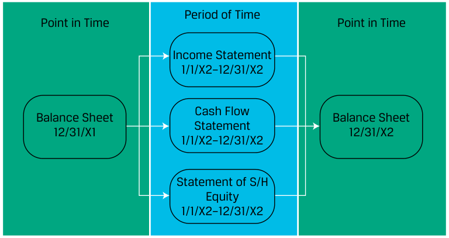
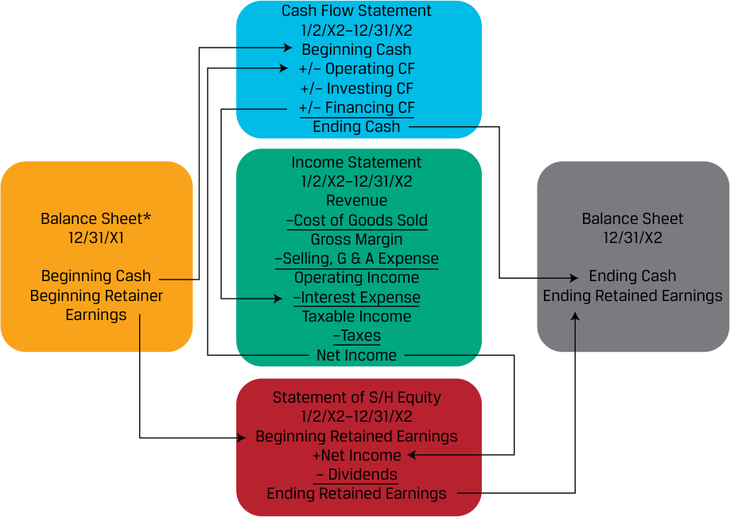

[Toàn Chương] LM04 — Learning Module 4 Analyzing Statements of Cash Flows I
Volume 4: Financial Statement Analysis
Learning Module 4 Analyzing Statements of Cash Flows I
Part 1/3: Introduction (PDF Pages 135–148)
Tập 4: Phân tích Báo cáo Tài chính (Volume 4: Financial Statement Analysis)
Học phần 4: Phân tích Báo cáo Lưu chuyển Tiền tệ I (Learning Module 4: Analyzing Statements of Cash Flows I)
Phần 1/3: Giới thiệu (Introduction) (Trang PDF 135–148)
L E A R N I N G M O D U L E
H Ọ C P H Ầ N (L E A R N I N G M O D U L E)
4
4
Analyzing Statements of Cash Flows I
Phân tích Báo cáo Lưu chuyển Tiền tệ I (Analyzing Statements of Cash Flows I)
by Elaine Henry, PhD, CFA, Thomas R Robinson, PhD, CFA, CAIA, J. Hennie van Greuning, DCom, CFA, and Michael A Broihahn, CPA, CIA, CFA.
Tác giả: Elaine Henry, PhD, CFA, Thomas R Robinson, PhD, CFA, CAIA, J. Hennie van Greuning, DCom, CFA, và Michael A Broihahn, CPA, CIA, CFA.
Elaine Henry, PhD, CFA, is at Stevens Institute of Technology (USA). Thomas R. Robinson, PhD, CFA, CAIA, Robinson Global Investment Management LLC, (USA). J. Hennie van Greuning, DCom, CFA, is at BIBD (Brunei). Michael A. Broihahn, CPA, CIA, CFA, is at Barry University (USA).
Elaine Henry, PhD, CFA, công tác tại Học viện Công nghệ Stevens (Hoa Kỳ). Thomas R. Robinson, PhD, CFA, CAIA, công tác tại Robinson Global Investment Management LLC, (Hoa Kỳ). J. Hennie van Greuning, DCom, CFA, công tác tại BIBD (Brunei). Michael A. Broihahn, CPA, CIA, CFA, công tác tại Đại học Barry (Hoa Kỳ).
LEARNING OUTCOMES
KẾT QUẢ HỌC TẬP (LEARNING OUTCOMES)
Mastery The candidate should be able to: describe how the cash flow statement is linked to the income statement and the balance sheet describe the steps in the preparation of direct and indirect cash flow statements, including how cash flows can be computed using income statement and balance sheet data demonstrate the conversion of cash flows from the indirect to direct method contrast cash flow statements prepared under International Financial Reporting Standards (IFRS) and US generally accepted accounting principles (US GAAP)
| Mức độ thành thạo | Ứng viên cần có khả năng: |
|---|---|
| mô tả cách thức báo cáo lưu chuyển tiền tệ (cash flow statement) liên kết với báo cáo kết quả hoạt động kinh doanh (income statement) và bảng cân đối kế toán (balance sheet) | |
| mô tả các bước lập báo cáo lưu chuyển tiền tệ theo phương pháp trực tiếp (direct method) và gián tiếp (indirect method), bao gồm cách tính toán các dòng tiền bằng dữ liệu từ báo cáo kết quả hoạt động kinh doanh và bảng cân đối kế toán | |
| trình bày cách chuyển đổi các dòng tiền từ phương pháp gián tiếp sang phương pháp trực tiếp | |
| đối chiếu các báo cáo lưu chuyển tiền tệ được lập theo Chuẩn mực Báo cáo Tài chính Quốc tế (IFRS) và các nguyên tắc kế toán được chấp nhận chung của Hoa Kỳ (US GAAP) |
The two major accounting standard setters are as follows: 1) the International Accounting Standards Board (IASB) who establishes International Financial Reporting Standards (IFRS) and 2) the Financial Accounting Standards Board (FASB) who establishes US GAAP. Throughout this learning module both standards are referred to and many, but not all, of these two sets of accounting rules are identified. Note: changes in accounting standards as well as new rulings and/or pronouncements issued after the publication of this learning module may cause some of the information to become dated.
Hai cơ quan ban hành chuẩn mực kế toán lớn gồm: 1) Hội đồng Chuẩn mực Kế toán Quốc tế (IASB), cơ quan thiết lập các Chuẩn mực Báo cáo Tài chính Quốc tế (IFRS) và 2) Hội đồng Chuẩn mực Kế toán Tài chính (FASB), cơ quan thiết lập US GAAP. Xuyên suốt học phần này, cả hai bộ chuẩn mực đều được tham chiếu và nhiều quy định, dù không phải tất cả, trong hai bộ quy tắc kế toán này được xác định. Lưu ý: những thay đổi trong chuẩn mực kế toán cũng như các phán quyết và/hoặc công bố mới được ban hành sau thời điểm xuất bản học phần này có thể khiến một số thông tin trở nên lỗi thời.
1
1
INTRODUCTION
GIỚI THIỆU (INTRODUCTION)
The statement of cash flows provides important information about a company’s cash receipts and cash payments during an accounting period, reconciling the cash accounts between balance sheet dates. Although the income statement provides similar measures on an accrual basis, cash flows and their timing are crucial to valuation as payments to investors are made in cash. Investors also use statement of cash flows to evaluate the company’s liquidity, solvency, and financial flexibility. In this module, we discuss the components of the cash flow statement and its links to the other financial statements.
Báo cáo lưu chuyển tiền tệ (statement of cash flows) cung cấp thông tin quan trọng về các khoản thu tiền và chi tiền của một công ty trong một kỳ kế toán, giúp đối chiếu các tài khoản tiền giữa các ngày lập bảng cân đối kế toán. Mặc dù báo cáo kết quả hoạt động kinh doanh cung cấp các thước đo tương tự trên cơ sở dồn tích (accrual basis), nhưng dòng tiền và thời điểm phát sinh của chúng đóng vai trò tối quan trọng đối với việc định giá bởi vì các khoản thanh toán cho nhà đầu tư được thực hiện bằng tiền mặt. Các nhà đầu tư cũng sử dụng báo cáo lưu chuyển tiền tệ để đánh giá tính thanh khoản (liquidity), khả năng thanh toán dài hạn (solvency) và sự linh hoạt tài chính (financial flexibility) của công ty. Trong học phần này, chúng ta thảo luận về các thành phần của báo cáo lưu chuyển tiền tệ và mối liên kết của nó với các báo cáo tài chính khác.
LEARNING MODULE OVERVIEW
TỔNG QUAN HỌC PHẦN (LEARNING MODULE OVERVIEW)
-
Understanding the interrelationships among the balance sheet, income statement, and cash flow statement is useful not only in evaluating the company’s financial health but also in detecting accounting irregularities.
-
The income statement and statement of cash flows provide key linkages between the current assets and current liabilities sections of the balance sheet.
-
Companies can use either the direct or the indirect method for reporting their operating cash flow:
-
The direct method discloses operating cash inflows by source (e.g., cash received from customers, cash received from investment income) and operating cash outflows by use (e.g., cash paid to suppliers, cash paid for interest) in the operating activities section of the cash flow statement.
-
The indirect method reconciles net income to operating cash flow by adjusting net income for all non-cash items and the net changes in working capital accounts.
-
Although the indirect method is most common, an analyst may desire to review direct-format operating cash flow to review trends in cash receipts and payments, such as cash received from customers or cash paid to suppliers.
-
Cash flows from operating activities reported under the indirect method can generally be converted to an approximation of the direct format by following a simple three-step process.
-
Cash flows from investing activities and from financing activities are both reported using a direct method, regardless of the method used for reporting operating cash flows.
-
Compared with US GAAP, the International Financial Reporting Standards (IFRS) allow more flexibility in the classification of items as operating, investing, or financing activities, such as interest paid or received and dividends paid or received and in how income tax expense is classified.
-
Hiểu được mối quan hệ qua lại giữa bảng cân đối kế toán, báo cáo kết quả hoạt động kinh doanh và báo cáo lưu chuyển tiền tệ không chỉ hữu ích trong việc đánh giá sức khỏe tài chính của công ty mà còn giúp phát hiện các bất thường về kế toán (accounting irregularities).
-
Báo cáo kết quả hoạt động kinh doanh và báo cáo lưu chuyển tiền tệ cung cấp những liên kết then chốt giữa phần tài sản ngắn hạn và nợ phải trả ngắn hạn của bảng cân đối kế toán.
-
Các công ty có thể sử dụng phương pháp trực tiếp (direct method) hoặc phương pháp gián tiếp (indirect method) để báo cáo dòng tiền từ hoạt động kinh doanh (operating cash flow) của mình:
- Phương pháp trực tiếp công bố các dòng tiền vào từ hoạt động kinh doanh theo nguồn thu (ví dụ: tiền thu từ khách hàng, tiền thu từ thu nhập đầu tư) và các dòng tiền ra từ hoạt động kinh doanh theo mục đích chi (ví dụ: tiền trả cho nhà cung cấp, tiền trả lãi vay) trong phần hoạt động kinh doanh của báo cáo lưu chuyển tiền tệ.
-
Phương pháp gián tiếp đối chiếu lợi nhuận ròng (net income) với dòng tiền từ hoạt động kinh doanh bằng cách điều chỉnh lợi nhuận ròng cho tất cả các khoản mục phi tiền tệ (non-cash items) và những thay đổi ròng trong các tài khoản vốn lưu động (working capital accounts).
-
Mặc dù phương pháp gián tiếp phổ biến nhất, một chuyên viên phân tích có thể muốn xem xét dòng tiền hoạt động kinh doanh theo định dạng trực tiếp để đánh giá xu hướng trong các khoản thu và chi tiền mặt, chẳng hạn như tiền thu từ khách hàng hoặc tiền trả cho nhà cung cấp.
-
Lưu chuyển tiền tệ từ hoạt động kinh doanh được báo cáo theo phương pháp gián tiếp nhìn chung có thể được chuyển đổi sang dạng xấp xỉ của định dạng trực tiếp bằng cách tuân theo một quy trình ba bước đơn giản.
-
Lưu chuyển tiền tệ từ hoạt động đầu tư (investing activities) và từ hoạt động tài trợ (financing activities) đều được báo cáo bằng phương pháp trực tiếp, bất kể phương pháp nào được sử dụng để báo cáo lưu chuyển tiền tệ từ hoạt động kinh doanh.
-
So với US GAAP, Chuẩn mực Báo cáo Tài chính Quốc tế (IFRS) cho phép sự linh hoạt cao hơn trong việc phân loại các khoản mục vào hoạt động kinh doanh, đầu tư hoặc tài trợ, chẳng hạn như tiền lãi đã trả hoặc đã nhận và cổ tức đã trả hoặc đã nhận, cũng như trong cách phân loại chi phí thuế thu nhập.
LINKAGES BETWEEN THE FINANCIAL STATEMENTS
CÁC LIÊN KẾT GIỮA CÁC BÁO CÁO TÀI CHÍNH (LINKAGES BETWEEN THE FINANCIAL STATEMENTS)
2
2
describe how the cash flow statement is linked to the income statement and the balance sheet
mô tả cách thức báo cáo lưu chuyển tiền tệ liên kết với báo cáo kết quả hoạt động kinh doanh và bảng cân đối kế toán
Primary Financial Statements
Các Báo cáo Tài chính Chính (Primary Financial Statements)
Recall that the four primary financial statements are interrelated and each provides specific information to analysts about an entity. The primary financial statements are as follows:
Hãy nhớ lại rằng bốn báo cáo tài chính chính có mối quan hệ qua lại với nhau và mỗi báo cáo cung cấp thông tin cụ thể cho các chuyên viên phân tích về một đơn vị. Các báo cáo tài chính chính bao gồm:
1. Balance Sheet—shows the financial position of an entity at a point in time , reporting the balances of “permanent” or “stock” accounts showing the entity’s assets and how those assets are financed.
1. Bảng cân đối kế toán (Balance Sheet)—hiển thị vị thế tài chính của một đơn vị tại một thời điểm (at a point in time), báo cáo số dư của các tài khoản “vĩnh viễn” (permanent) hay tài khoản “thời điểm” (stock) cho biết tài sản của đơn vị và cách thức các tài sản đó được tài trợ.
2. Income Statement—provides information about a company’s financial performance between balance sheet dates. The income statement is made up of revenue, expense, gain, and loss accounts. In contrast to the balance sheet, the income statement is a “flow” statement as it captures income activity between two balance sheet dates. Income statements prepared under IFRS or US GAAP are based on accrual accounting, so they do not necessarily reflect cash inflows and outflows.
2. Báo cáo kết quả hoạt động kinh doanh (Income Statement)—cung cấp thông tin về hiệu quả hoạt động tài chính của một công ty giữa các ngày lập bảng cân đối kế toán. Báo cáo kết quả hoạt động kinh doanh được cấu thành từ các tài khoản doanh thu (revenue), chi phí (expense), thu nhập khác/lãi (gain) và chi phí khác/lỗ (loss). Trái ngược với bảng cân đối kế toán, báo cáo kết quả hoạt động kinh doanh là một báo cáo “thời kỳ” hay “dòng chảy” (flow statement) vì nó nắm bắt hoạt động tạo thu nhập giữa hai ngày lập bảng cân đối kế toán. Báo cáo kết quả hoạt động kinh doanh được lập theo IFRS hoặc US GAAP dựa trên kế toán dồn tích (accrual accounting), vì vậy chúng không nhất thiết phản ánh các dòng tiền vào và dòng tiền ra.
3. Statement of Cash Flows—reports the change in an entity’s cash, cash equivalents, and restricted cash between balance sheet dates. The statement classifies cash inflows and outflows during the period as operating, investing, or financing activities. Because the cash flow statement reports performance over a period of time, it is also a “flow” statement, like the income statement.
3. Báo cáo lưu chuyển tiền tệ (Statement of Cash Flows)—báo cáo sự thay đổi trong tiền, các khoản tương đương tiền (cash equivalents) và tiền bị giới hạn sử dụng (restricted cash) của một đơn vị giữa các ngày lập bảng cân đối kế toán. Báo cáo này phân loại các dòng tiền vào và dòng tiền ra trong kỳ thành hoạt động kinh doanh (operating), hoạt động đầu tư (investing) hoặc hoạt động tài trợ (financing). Bởi vì báo cáo lưu chuyển tiền tệ báo cáo hiệu quả hoạt động trong một khoảng thời gian, nó cũng là một báo cáo “dòng chảy” (flow statement), giống như báo cáo kết quả hoạt động kinh doanh.
4. Statement of Shareholder’s Equity—provides information about how a company’s equity has changed between balance sheet dates. The statement identifies the significant components of shareholders equity that are reported on the balance sheet (e.g., common stock and retained earnings) and the activities that occurred during the period that impacted these accounts (e.g., share issuance, net income or loss). Like the income statement and statement of cash flows, the statement of shareholders equity is also a “flow” statement.
4. Báo cáo thay đổi vốn chủ sở hữu (Statement of Shareholders’ Equity)—cung cấp thông tin về cách thức vốn chủ sở hữu của công ty đã thay đổi giữa các ngày lập bảng cân đối kế toán. Báo cáo này xác định các thành phần trọng yếu của vốn chủ sở hữu được báo cáo trên bảng cân đối kế toán (ví dụ: cổ phiếu phổ thông và lợi nhuận giữ lại) và các hoạt động đã diễn ra trong kỳ có tác động đến các tài khoản này (ví dụ: phát hành cổ phiếu, lãi hoặc lỗ ròng). Giống như báo cáo kết quả hoạt động kinh doanh và báo cáo lưu chuyển tiền tệ, báo cáo thay đổi vốn chủ sở hữu cũng là một báo cáo “dòng chảy”.
Relationship between Financial Statements
Mối quan hệ giữa các Báo cáo Tài chính (Relationship between Financial Statements)
As illustrated in Exhibit 1, the income statement, cash flow statement and statement of shareholders’ equity link the balance sheet from one period to the next.
Như được minh họa trong Bảng 1, báo cáo kết quả hoạt động kinh doanh, báo cáo lưu chuyển tiền tệ và báo cáo thay đổi vốn chủ sở hữu liên kết bảng cân đối kế toán từ kỳ này sang kỳ tiếp theo.
Exhibit 1: Relationship between the Financial Statements
Bảng 1: Mối quan hệ giữa các Báo cáo Tài chính (Exhibit 1: Relationship between the Financial Statements)

Chú thích hình ảnh: - Thời điểm (Point in Time): Bảng cân đối kế toán ngày 31/12/X1 (Balance Sheet 12/31/X1) và Bảng cân đối kế toán ngày 31/12/X2 (Balance Sheet 12/31/X2). - Khoảng thời gian / Thời kỳ (Period of Time – từ 1/1/X2 đến 31/12/X2): Báo cáo kết quả hoạt động kinh doanh (Income Statement), Báo cáo lưu chuyển tiền tệ (Cash Flow Statement), và Báo cáo thay đổi vốn chủ sở hữu (Statement of S/H Equity) kết nối hai bảng cân đối kế toán tại hai thời điểm.
For example, the beginning and ending balances of cash are shown on the company’s 20X1 and 20X2 balance sheets, and the bottom of the 20X2 cash flow statement reconciles 20X1 cash to 20X2 cash. The relationship, stated in general terms, is as shown in Exhibit 2.
Ví dụ, số dư tiền đầu kỳ và cuối kỳ được hiển thị trên bảng cân đối kế toán năm 20X1 và 20X2 của công ty, và phần cuối của báo cáo lưu chuyển tiền tệ năm 20X2 đối chiếu tiền năm 20X1 với tiền năm 20X2. Mối quan hệ này, được phát biểu dưới dạng tổng quát, như hiển thị trong Bảng 2.
Exhibit 2: Beginning and Ending Balances
Bảng 2: Số dư Đầu kỳ và Cuối kỳ (Exhibit 2: Beginning and Ending Balances)
| Balance Sheet at | Statement of Cash Flows for Year | Balance Sheet at |
|---|---|---|
| 31 December 20X1 | Ended 31 December 20X2 | 31 December 20X2 |
| Beginning cash | Plus: Cash inflows (from oper- i Less: Cash outflows (for oper- i |
Ending cash |
| (as of Year-end 31 | l ating, investing, and financing l ating, investing, and financing |
(as of Year-end 31 |
| December 20x1) | i activities) i activities) |
December 20x2) |
| Bảng cân đối kế toán tại ngày 31 tháng 12 năm 20X1 | Báo cáo lưu chuyển tiền tệ cho Năm kết thúc ngày 31 tháng 12 năm 20X2 | Bảng cân đối kế toán tại ngày 31 tháng 12 năm 20X2 |
|---|---|---|
| Tiền đầu kỳ (tại ngày cuối năm 31 tháng 12 năm 20X1) |
Cộng: Các dòng tiền vào (từ hoạt động kinh doanh, đầu tư và tài trợ) Trừ: Các dòng tiền ra (cho hoạt động kinh doanh, đầu tư và tài trợ) |
Tiền cuối kỳ (tại ngày cuối năm 31 tháng 12 năm 20X2) |
Exhibit 3 adds greater detail to Exhibit 1, tracing specific linkages through the four financial statements.
Bảng 3 bổ sung chi tiết cụ thể hơn cho Bảng 1, lần theo các mối liên kết cụ thể xuyên suốt bốn báo cáo tài chính.
Exhibit 3: Interaction of Financial Statement Accounts
Bảng 3: Sự tương tác của các Tài khoản Báo cáo Tài chính (Exhibit 3: Interaction of Financial Statement Accounts)

Chú thích hình ảnh: - Bảng cân đối kế toán 31/12/X1 (Balance Sheet 12/31/X1): Tiền đầu kỳ (Beginning Cash), Lợi nhuận giữ lại đầu kỳ (Beginning Retained Earnings). - Báo cáo lưu chuyển tiền tệ (Cash Flow Statement 1/2/X2–12/31/X2): Tiền đầu kỳ $\pm$ Dòng tiền hoạt động kinh doanh (Operating CF) $\pm$ Dòng tiền đầu tư (Investing CF) $\pm$ Dòng tiền tài trợ (Financing CF) $=$ Tiền cuối kỳ (Ending Cash). - Báo cáo kết quả hoạt động kinh doanh (Income Statement 1/2/X2–12/31/X2): Doanh thu (Revenue) $-$ Giá vốn hàng bán (Cost of Goods Sold) $=$ Lợi nhuận gộp (Gross Margin) $-$ Chi phí bán hàng, quản lý & hành chính (Selling, G&A Expense) $=$ Lợi nhuận hoạt động (Operating Income) $-$ Chi phí lãi vay (Interest Expense) $=$ Thu nhập chịu thuế (Taxable Income) $-$ Thuế (Taxes) $=$ Lợi nhuận ròng (Net Income). - Báo cáo thay đổi vốn chủ sở hữu (Statement of S/H Equity 1/2/X2–12/31/X2): Lợi nhuận giữ lại đầu kỳ $+$ Lợi nhuận ròng $-$ Cổ tức (Dividends) $=$ Lợi nhuận giữ lại cuối kỳ (Ending Retained Earnings). - Bảng cân đối kế toán 31/12/X2 (Balance Sheet 12/31/X2): Nhận số dư Tiền cuối kỳ và Lợi nhuận giữ lại cuối kỳ.
For example, the 20X2 statement of shareholders’ equity reconciles the equity accounts reported on 20X1 balance sheet to the equity accounts reported on the 20X2 balance sheet, including additions (or subtractions) resulting from net income or loss reported on the income statement and dividends paid that are also reported on the statement of cash flows if made in cash.
Ví dụ, báo cáo thay đổi vốn chủ sở hữu năm 20X2 đối chiếu các tài khoản vốn chủ sở hữu được báo cáo trên bảng cân đối kế toán năm 20X1 với các tài khoản vốn chủ sở hữu được báo cáo trên bảng cân đối kế toán năm 20X2, bao gồm các khoản cộng thêm (hoặc trừ đi) phát sinh từ lãi hoặc lỗ ròng được báo cáo trên báo cáo kết quả hoạt động kinh doanh và cổ tức đã trả vốn cũng được báo cáo trên báo cáo lưu chuyển tiền tệ nếu được chi trả bằng tiền mặt.
Linkages Between Current Assets and Current Liabilities
Các Liên kết giữa Tài sản Ngắn hạn và Nợ phải trả Ngắn hạn (Linkages Between Current Assets and Current Liabilities)
The income statement and statement of cash flows also provide key linkages between the current assets and current liabilities sections of the balance sheet. Differences between the accrual and cash accounting recognition of operating activities result in an increase or decrease in a current asset or liability on the balance sheet. For example, accrual basis revenue in excess of cash collections will be accompanied by an increase in accounts receivable. If expenses reported using accrual accounting are lower than cash actually paid, the result will typically be a decrease in accounts payable or another accrued liability account. Finally, in situations in which a company is paid in advance for the delivery of a service or product in the future, it will recognize the cash received as an asset, but it also must recognize a liability for its obligation to deliver service or product in the future, typically referred to as deferred revenue. A deferred revenue liability account is derecognized upon the recognition of revenue when the entity satisfies its performance obligations.
Báo cáo kết quả hoạt động kinh doanh và báo cáo lưu chuyển tiền tệ cũng cung cấp các mối liên kết then chốt giữa phần tài sản ngắn hạn và nợ phải trả ngắn hạn của bảng cân đối kế toán. Sự khác biệt giữa việc ghi nhận theo kế toán dồn tích và kế toán tiền mặt đối với các hoạt động kinh doanh dẫn đến sự gia tăng hoặc sụt giảm ở một tài sản ngắn hạn hoặc nợ phải trả ngắn hạn trên bảng cân đối kế toán. Ví dụ, doanh thu theo cơ sở dồn tích vượt quá số tiền thu được sẽ đi kèm với sự gia tăng trong khoản phải thu khách hàng (accounts receivable). Nếu chi phí được báo cáo theo kế toán dồn tích thấp hơn số tiền thực tế đã chi trả, kết quả thường sẽ là sự sụt giảm trong khoản phải trả người bán (accounts payable) hoặc một tài khoản nợ phải trả dồn tích (accrued liability) khác. Cuối cùng, trong những tình huống mà một công ty được thanh toán trước cho việc cung cấp dịch vụ hoặc giao sản phẩm trong tương lai, công ty sẽ ghi nhận số tiền nhận được là một tài sản, nhưng đồng thời cũng phải ghi nhận một khoản nợ phải trả cho nghĩa vụ phải cung cấp dịch vụ hoặc giao sản phẩm trong tương lai của mình, thường được gọi là doanh thu hoãn lại (deferred revenue). Tài khoản nợ phải trả doanh thu hoãn lại sẽ được dừng ghi nhận (derecognized) khi ghi nhận doanh thu vào lúc đơn vị hoàn thành các nghĩa vụ thực hiện (performance obligations) của mình.
If an analyst knows beginning accounts receivable, revenues, and cash collected from customers, they can compute ending accounts receivable, as the accounts are linked as shown in Exhibit 4.
Nếu một chuyên viên phân tích biết số dư khoản phải thu khách hàng đầu kỳ, doanh thu, và tiền thu được từ khách hàng, họ có thể tính được số dư khoản phải thu khách hàng cuối kỳ, bởi vì các tài khoản này có mối liên kết như hiển thị trong Bảng 4.
Exhibit 4: Ending Accounts Receivable
Bảng 4: Khoản phải thu Khách hàng Cuối kỳ (Exhibit 4: Ending Accounts Receivable)
| Statement of Cash Flows for | |||
|---|---|---|---|
| Beginning Balance Sheet at | Income Statement for Year | Year | Ending Balance Sheet at |
| 31 December 20X1 | Ended 31 December 20X2 | Ended 31 December 20X2 | 31 December 20X2 |
| Beginning accounts | Plus: Revenues | Minus: Cash collected from | Equals: Ending accounts |
| receivable | customers | receivable |
| Bảng cân đối kế toán đầu kỳ tại ngày 31 tháng 12 năm 20X1 | Báo cáo kết quả hoạt động kinh doanh cho Năm kết thúc ngày 31 tháng 12 năm 20X2 | Báo cáo lưu chuyển tiền tệ cho Năm kết thúc ngày 31 tháng 12 năm 20X2 | Bảng cân đối kế toán cuối kỳ tại ngày 31 tháng 12 năm 20X2 |
|---|---|---|---|
| Khoản phải thu khách hàng đầu kỳ (Beginning accounts receivable) | Cộng: Doanh thu (Plus: Revenues) | Trừ: Tiền thu được từ khách hàng (Minus: Cash collected from customers) | Bằng: Khoản phải thu khách hàng cuối kỳ (Equals: Ending accounts receivable) |
Understanding the interrelationships among the balance sheet, income statement, and cash flow statement is useful not only in evaluating the company’s financial health but also in detecting accounting irregularities. Recall the extreme illustration of a hypothetical company that makes sales on account without regard to future collections and thus reports healthy sales and significant income on its income statement yet lacks cash inflow. Such a pattern would occur if a company improperly recognized revenue.
Việc hiểu rõ mối quan hệ qua lại giữa bảng cân đối kế toán, báo cáo kết quả hoạt động kinh doanh và báo cáo lưu chuyển tiền tệ không chỉ hữu ích trong việc đánh giá sức khỏe tài chính của công ty mà còn giúp phát hiện các bất thường về kế toán. Hãy nhớ lại ví dụ minh họa cực đoan về một công ty giả định thực hiện bán hàng chịu mà không quan tâm đến khả năng thu hồi tiền trong tương lai và do đó báo cáo doanh số bán hàng khả quan cùng lợi nhuận đáng kể trên báo cáo kết quả hoạt động kinh doanh nhưng lại thiếu hụt dòng tiền vào. Một khuôn mẫu như vậy sẽ xảy ra nếu một công ty ghi nhận doanh thu không đúng quy định.
Example 1–Example 4 demonstrate how common business transactions affect a company’s balance sheet, income statement, and statement of cash flows. Notice how all three financial statements are needed to fully account for the transactions.
Ví dụ 1–Ví dụ 4 minh họa cách thức các giao dịch kinh doanh phổ biến ảnh hưởng đến bảng cân đối kế toán, báo cáo kết quả hoạt động kinh doanh và báo cáo lưu chuyển tiền tệ của một công ty. Hãy chú ý cách mà cả ba báo cáo tài chính đều cần thiết để hạch toán đầy đủ các giao dịch.
EXAMPLE 1
VÍ DỤ 1 (EXAMPLE 1)
Inventory Purchase and Sale Impact on Financial Statements
Tác động của việc Mua và Bán Hàng tồn kho lên Báo cáo Tài chính (Inventory Purchase and Sale Impact on Financial Statements)
Assume fictional company ABC, a retailer, purchases USD100 of inventory on 1 January 1, 20X1 on credit with payment due to its supplier in 30 days. On 1 February, ABC sells the product to Customer X for USD150 with payment due by 16 February, 20X1. Customer X pays for the product on 15 February, 20X1.
Giả sử công ty giả định ABC, một nhà bán lẻ, mua 100 USD hàng tồn kho vào ngày 1 tháng 1 năm 20X1 theo hình thức mua chịu với khoản thanh toán đến hạn trả cho nhà cung cấp trong vòng 30 ngày. Vào ngày 1 tháng 2, ABC bán sản phẩm cho Khách hàng X với giá 150 USD với thời hạn thanh toán trước ngày 16 tháng 2 năm 20X1. Khách hàng X thanh toán tiền hàng vào ngày 15 tháng 2 năm 20X1.
This series of transaction would affect ABC’s financial statements as follows shown in Exhibit 5.
Chuỗi giao dịch này sẽ ảnh hưởng đến các báo cáo tài chính của ABC như hiển thị trong Bảng 5.
Exhibit 5: ABC’s Financial Statements
Bảng 5: Các Báo cáo Tài chính của ABC (Exhibit 5: ABC’s Financial Statements)
| Date | Balance Sheet | Income Statement | Statement of Cash Flows |
|---|---|---|---|
| 1 January | Inventory (asset) increases by USD100 Accounts Payable (liability) increases by USD100 |
N/A | N/A |
| 30 January | Cash (asset) decreases by USD100 Accounts Payable (liability) decreases by USD100 |
N/A | Cash flows from operating activities decreases by USD100 |
| 1 February | Accounts Receivable (asset) increases by USD150 Inventory (asset) decreases by USD100 |
Revenue increases by USD150 Cost of sales increases by USD100 |
N/A |
| 15 February | Cash (asset) increases by USD150 Accounts receivable (asset) decreases byUSD150 |
Cash flows from operating activities increases by USD150 |
| Ngày | Bảng cân đối kế toán (Balance Sheet) | Báo cáo kết quả hoạt động kinh doanh (Income Statement) | Báo cáo lưu chuyển tiền tệ (Statement of Cash Flows) |
|---|---|---|---|
| 1 tháng 1 | Hàng tồn kho (tài sản) tăng thêm 100 USD Khoản phải trả người bán (nợ phải trả) tăng thêm 100 USD |
Không áp dụng (N/A) | Không áp dụng (N/A) |
| 30 tháng 1 | Tiền mặt (tài sản) giảm đi 100 USD Khoản phải trả người bán (nợ phải trả) giảm đi 100 USD |
Không áp dụng (N/A) | Dòng tiền từ hoạt động kinh doanh giảm đi 100 USD |
| 1 tháng 2 | Khoản phải thu khách hàng (tài sản) tăng thêm 150 USD Hàng tồn kho (tài sản) giảm đi 100 USD |
Doanh thu tăng thêm 150 USD Giá vốn hàng bán tăng thêm 100 USD |
Không áp dụng (N/A) |
| 15 tháng 2 | Tiền mặt (tài sản) tăng thêm 150 USD Khoản phải thu khách hàng (tài sản) giảm đi 150 USD |
Không áp dụng (N/A) | Dòng tiền từ hoạt động kinh doanh tăng thêm 150 USD |
Note the statement of cash flows is affected only when the company pays or receives cash, which differs from recognition on the income statement.
Lưu ý rằng báo cáo lưu chuyển tiền tệ chỉ bị ảnh hưởng khi công ty chi trả hoặc nhận tiền mặt, điều này khác với việc ghi nhận trên báo cáo kết quả hoạt động kinh doanh.
EXAMPLE 2
VÍ DỤ 2 (EXAMPLE 2)
Depreciation Impact on Financial Statements
Tác động của Khấu hao lên Báo cáo Tài chính (Depreciation Impact on Financial Statements)
On 1 January, fictional company Notion Ltd, a manufacturing company, owns USD100 of equipment used in the production of a product that is sold to wholesale customers. The equipment has a 10-year life and no salvage value. Notion uses straight-line depreciation, so the annual depreciation expense is USD10. On 1 July, Notion Ltd. makes a new capital investment for a different piece of equipment with a purchase price of USD200 and annual depreciation expense of USD50. Notion Ltd. pays for the equipment in cash upon receipt. Depreciation expense is recorded at the end of the fiscal year. The impact on Notion Ltd.’s financial statements is summarized in Exhibit 6.
Vào ngày 1 tháng 1, công ty giả định Notion Ltd, một công ty sản xuất, sở hữu 100 USD thiết bị được sử dụng trong quá trình sản xuất một sản phẩm bán cho các khách hàng bán buôn. Thiết bị này có thời gian sử dụng 10 năm và không có giá trị thanh lý thu hồi (salvage value). Notion sử dụng phương pháp khấu hao đường thẳng, vì vậy chi phí khấu hao hàng năm là 10 USD. Vào ngày 1 tháng 7, Notion Ltd. thực hiện một khoản đầu tư vốn mới cho một thiết bị khác với giá mua là 200 USD và chi phí khấu hao hàng năm là 50 USD. Notion Ltd. thanh toán tiền thiết bị bằng tiền mặt ngay khi nhận hàng. Chi phí khấu hao được ghi nhận vào cuối năm tài chính. Tác động lên các báo cáo tài chính của Notion Ltd. được tóm tắt trong Bảng 6.
Exhibit 6: Notion Ltd. Financial Statement
Bảng 6: Báo cáo Tài chính của Notion Ltd. (Exhibit 6: Notion Ltd. Financial Statement)
| Date | Balance Sheet | Income Statement |
Statement of Cash Flows |
|---|---|---|---|
| 1 January | Equipment (asset) of USD100 |
N/A | N/A |
| 1 July | Equipment (asset) increases by USD200 Cash (asset) decreases by USD200 |
N/A | Cash flows from investing activi- ties decreases by USD200 |
| 31 | Accumulated | Depreciation | N/A |
| December | Depreciation (contra asset) increases by USD35 |
expense increases by USD35 |
| Ngày | Bảng cân đối kế toán (Balance Sheet) | Báo cáo kết quả hoạt động kinh doanh (Income Statement) | Báo cáo lưu chuyển tiền tệ (Statement of Cash Flows) |
|---|---|---|---|
| 1 tháng 1 | Thiết bị (tài sản) trị giá 100 USD | Không áp dụng (N/A) | Không áp dụng (N/A) |
| 1 tháng 7 | Thiết bị (tài sản) tăng thêm 200 USD Tiền mặt (tài sản) giảm đi 200 USD |
Không áp dụng (N/A) | Dòng tiền từ hoạt động đầu tư giảm đi 200 USD |
| 31 tháng 12 | Khấu hao lũy kế (tài sản điều chỉnh giảm – contra asset) tăng thêm 35 USD | Chi phí khấu hao tăng thêm 35 USD | Không áp dụng (N/A) |
EXAMPLE 3
VÍ DỤ 3 (EXAMPLE 3)
Borrowing Impact on Financial Statements
Tác động của Hoạt động Đi vay lên Báo cáo Tài chính (Borrowing Impact on Financial Statements)
On 31 March, fictional Geneva Company borrows USD500 from Stockholm Bank (also fictional). The terms of the loan are interest accrues at 10 percent and payment is due along with principal upon maturity of the loan on 30 September. Accordingly, Geneva is to pay USD525 to Stockholm Bank on 30 September consisting of USD500 in loan principal and USD25 of interest (USD500 loan × 10% × ½ year.) The impact on Geneva’s financial statements is summarized in Exhibit 7.
Vào ngày 31 tháng 3, Công ty giả định Geneva vay 500 USD từ Ngân hàng Stockholm (cũng là giả định). Các điều khoản của khoản vay quy định tiền lãi tính dồn tích ở mức 10 phần trăm và khoản thanh toán lãi sẽ đến hạn cùng với tiền gốc khi khoản vay đáo hạn vào ngày 30 tháng 9. Theo đó, Geneva sẽ phải trả 525 USD cho Ngân hàng Stockholm vào ngày 30 tháng 9, bao gồm 500 USD tiền gốc vay và 25 USD tiền lãi ($\text{khoản vay } 500\text{ USD} \times 10\% \times \frac{1}{2}\text{ năm}$). Tác động lên các báo cáo tài chính của Geneva được tóm tắt trong Bảng 7.
Exhibit 7: Geneva Financial Statement
Bảng 7: Báo cáo Tài chính của Geneva (Exhibit 7: Geneva Financial Statement)
| Date | Balance Sheet | Income Statement |
Statement of Cash Flows |
|---|---|---|---|
| 31 March | Cash (asset) increases by USD500 Loans payable (lia- bility) increases by USD500 |
N/A | Cash flows from financing activities increases by USD500 |
| 30 September | Cash (asset) decreases by USD525 Loans payable (lia- |
Interest expense increases by |
Cash flows from financing or operating activities decreases by |
| bility) decreases by USD500 |
USD25 | USD25 Cash flows from financing activities decreases by USD500 |
| Ngày | Bảng cân đối kế toán (Balance Sheet) | Báo cáo kết quả hoạt động kinh doanh (Income Statement) | Báo cáo lưu chuyển tiền tệ (Statement of Cash Flows) |
|---|---|---|---|
| 31 tháng 3 | Tiền mặt (tài sản) tăng thêm 500 USD Khoản vay phải trả (nợ phải trả) tăng thêm 500 USD |
Không áp dụng (N/A) | Dòng tiền từ hoạt động tài trợ tăng thêm 500 USD |
| 30 tháng 9 | Tiền mặt (tài sản) giảm đi 525 USD Khoản vay phải trả (nợ phải trả) giảm đi 500 USD |
Chi phí lãi vay tăng thêm 25 USD | Dòng tiền từ hoạt động tài trợ hoặc hoạt động kinh doanh giảm đi 25 USD Dòng tiền từ hoạt động tài trợ giảm đi 500 USD |
EXAMPLE 4
VÍ DỤ 4 (EXAMPLE 4)
Equipment Purchase Impact on Financial Statements
Tác động của việc Mua Thiết bị lên Báo cáo Tài chính (Equipment Purchase Impact on Financial Statements)
Assume Mountain Company, a fictional manufacturer, agrees to produce a custom-made piece of equipment for Cirrus Corp. (another fictional company) in two months for a sales price of USD1,000. On 1 October, Cirrus provides Mountain with a down payment of USD300 from Cirrus and agrees to pay the balance of USD700 when the equipment is delivered on 30 November. Mountain Company recognizes deferred revenue when it receives the USD300 on 1 October, which will be derecognized when Mountain fulfills its obligation and delivers the equipment. The impact on Mountain Company’s financial statement is summarized in Exhibit 8.
Giả sử Công ty Mountain, một nhà sản xuất giả định, đồng ý sản xuất một thiết bị đặt làm riêng cho Cirrus Corp. (một công ty giả định khác) trong vòng hai tháng với giá bán là 1.000 USD. Vào ngày 1 tháng 10, Cirrus trả trước cho Mountain một khoản tiền đặt cọc là 300 USD và đồng ý thanh toán phần còn lại 700 USD khi thiết bị được giao vào ngày 30 tháng 11. Công ty Mountain ghi nhận doanh thu hoãn lại (deferred revenue) khi nhận được 300 USD vào ngày 1 tháng 10, khoản này sẽ được dừng ghi nhận khi Mountain hoàn thành nghĩa vụ của mình và bàn giao thiết bị. Tác động lên báo cáo tài chính của Công ty Mountain được tóm tắt trong Bảng 8.
Exhibit 8: Mountain Company Financial Statement
Bảng 8: Báo cáo Tài chính của Công ty Mountain (Exhibit 8: Mountain Company Financial Statement)
| Date | Balance Sheet | Income Statement |
Statement of Cash Flows |
|---|---|---|---|
| 1 October | Cash (asset) increases by USD300 Deferred revenue (liability) increases by USD300 |
N/A | Cash flows from operating activities increases by USD300 |
| 30 September | Cash (asset) increases by USD700 Deferred revenue (liability) decreases by USD300 |
Revenue increases by USD1,000 |
Cash flows from operating activities increases by USD700 |
| Ngày | Bảng cân đối kế toán (Balance Sheet) | Báo cáo kết quả hoạt động kinh doanh (Income Statement) | Báo cáo lưu chuyển tiền tệ (Statement of Cash Flows) |
|---|---|---|---|
| 1 tháng 10 | Tiền mặt (tài sản) tăng thêm 300 USD Doanh thu hoãn lại (nợ phải trả) tăng thêm 300 USD |
Không áp dụng (N/A) | Dòng tiền từ hoạt động kinh doanh tăng thêm 300 USD |
| 30 tháng 11 (bản gốc ghi 30 September) | Tiền mặt (tài sản) tăng thêm 700 USD Doanh thu hoãn lại (nợ phải trả) giảm đi 300 USD |
Doanh thu tăng thêm 1.000 USD | Dòng tiền từ hoạt động kinh doanh tăng thêm 700 USD |
THE DIRECT METHOD FOR CASH FLOWS FROM OPERATING ACTIVITIES
PHƯƠNG PHÁP TRỰC TIẾP ĐỐI VỚI LƯU CHUYỂN TIỀN TỆ TỪ HOẠT ĐỘNG KINH DOANH (THE DIRECT METHOD FOR CASH FLOWS FROM OPERATING ACTIVITIES)
3
3
describe the steps in the preparation of direct and indirect cash flow statements, including how cash flows can be computed using income statement and balance sheet data
mô tả các bước lập báo cáo lưu chuyển tiền tệ theo phương pháp trực tiếp và gián tiếp, bao gồm cách tính toán các dòng tiền bằng dữ liệu từ báo cáo kết quả hoạt động kinh doanh và bảng cân đối kế toán
The first step in preparing the cash flow statement is to determine cash flows from operating activities, which can be presented using the direct or indirect method. The direct method uses the major categories of gross cash receipts and payments, and the indirect method reconciles net income to net cash flow. Cash flows from investing activities and from financing activities are identical regardless of whether the direct or indirect method is used to present operating cash flows.
Bước đầu tiên trong việc lập báo cáo lưu chuyển tiền tệ là xác định lưu chuyển tiền tệ từ hoạt động kinh doanh, vốn có thể được trình bày bằng phương pháp trực tiếp hoặc gián tiếp. Phương pháp trực tiếp sử dụng các nhóm chính của tổng tiền thu vào và tổng tiền chi ra (gross cash receipts and payments), còn phương pháp gián tiếp đối chiếu lợi nhuận ròng với dòng tiền ròng. Lưu chuyển tiền tệ từ hoạt động đầu tư và từ hoạt động tài trợ là hoàn toàn giống nhau bất kể phương pháp trực tiếp hay gián tiếp được sử dụng để trình bày dòng tiền từ hoạt động kinh doanh.
- Companies often disclose only indirect operating cash flow information but understanding how cash flow information is put together will enable you to take an indirect statement apart and reconfigure it to approximate a direct cash flow statement, which—while not perfectly accurate—can be useful. This lesson demonstrates the approximate preparation of a direct cash flow statement using the income statement and the comparative balance sheets for Acme Corporation (a fictitious retail company) shown in Exhibit 9 and Exhibit 10.
- Các công ty thường chỉ thuyết minh thông tin dòng tiền từ hoạt động kinh doanh theo phương pháp gián tiếp, nhưng việc hiểu được cách thức tổng hợp thông tin dòng tiền sẽ giúp bạn bóc tách một báo cáo gián tiếp và cấu trúc lại nó để xấp xỉ một báo cáo lưu chuyển tiền tệ trực tiếp, điều này—mặc dù không hoàn toàn chính xác tuyệt đối—nhưng có thể rất hữu ích. Bài học này trình bày cách lập gần đúng một báo cáo lưu chuyển tiền tệ theo phương pháp trực tiếp bằng cách sử dụng báo cáo kết quả hoạt động kinh doanh và bảng cân đối kế toán so sánh của Tập đoàn Acme (một công ty bán lẻ giả định) được hiển thị trong Bảng 9 và Bảng 10.
Exhibit 9: Acme Corporation Income Statement Year Ended 31 December 2018
Bảng 9: Báo cáo Kết quả Hoạt động Kinh doanh của Tập đoàn Acme cho Năm Kết thúc Ngày 31 tháng 12 năm 2018 (Exhibit 9: Acme Corporation Income Statement Year Ended 31 December 2018)
| Revenue (net) | USD23,598 | |
|---|---|---|
| Cost of goods sold | 11,456 | |
| Gross profit | 12,142 | |
| i Salary and wage expense |
USD4,123 | |
| Depreciation expense | 1,052 | |
| Other operating expenses | 3,577 | |
| Total operating expenses | 8,752 | |
| Operating profit | 3,390 | |
| i Other revenues (expenses): |
||
| Gain on sale of equipment | 205 | |
| Interest expense | (246) | (41) |
| Income before tax | 3,349 | |
| Income tax expense | 1,139 | |
| Net income | USD2,210 |
| Khoản mục | Chi tiết | Tổng cộng |
|---|---|---|
| Doanh thu thuần (Revenue, net) | USD23.598 | |
| Giá vốn hàng bán (Cost of goods sold) | 11.456 | |
| Lợi nhuận gộp (Gross profit) | 12.142 | |
| Chi phí tiền lương và tiền công (Salary and wage expense) | USD4.123 | |
| Chi phí khấu hao (Depreciation expense) | 1.052 | |
| Chi phí hoạt động khác (Other operating expenses) | 3.577 | |
| Tổng chi phí hoạt động (Total operating expenses) | 8.752 | |
| Lợi nhuận hoạt động (Operating profit) | 3.390 | |
| Doanh thu (chi phí) khác (Other revenues (expenses)): | ||
| Lãi từ thanh lý thiết bị (Gain on sale of equipment) | 205 | |
| Chi phí lãi vay (Interest expense) | (246) | (41) |
| Lợi nhuận trước thuế (Income before tax) | 3.349 | |
| Chi phí thuế thu nhập (Income tax expense) | 1.139 | |
| Lợi nhuận ròng (Net income) | USD2.210 |
Exhibit 10: Acme Corporation Comparative Balance Sheets 31 December 2018 and 2017
Bảng 10: Bảng Cân đối Kế toán So sánh của Tập đoàn Acme tại Ngày 31 tháng 12 năm 2018 và 2017 (Exhibit 10: Acme Corporation Comparative Balance Sheets 31 December 2018 and 2017)
| 2018 | 2017 | Net Change | |
|---|---|---|---|
| Cash | USD1,011 | USD1,163 | USD(152) |
| Khoản mục | 2018 | 2017 | Thay đổi ròng (Net Change) |
|---|---|---|---|
| Tiền mặt (Cash) | USD1.011 | USD1.163 | USD(152) |
| Accounts receivable | 1,012 | 957 | 55 |
|---|---|---|---|
| Inventory | 3,984 | 3,277 | 707 |
| Prepaid expenses | 155 | 178 | (23) |
| Total current assets | 6,162 | 5,575 | 587 |
| Land | 510 | 510 | — |
| Buildings | 3,680 | 3,680 | — |
| Equipment* | 8,798 | 8,555 | 243 |
| Less: accumulated depreciation | (3,443) | (2,891) | (552) |
| Total long-term assets | 9,545 | 9,854 | (309) |
| Total assets | USD15,707 | USD15,429 | USD278 |
| Accounts payable | USD3,588 | USD3,325 | USD263 |
| Salary and wage payable | 85 | 75 | 10 |
| Interest payable | 62 | 74 | (12) |
| Income tax payable | 55 | 50 | 5 |
| Other accrued liabilities | 1,126 | 1,104 | 22 |
| Total current liabilities | 4,916 | 4,628 | 288 |
| Long-term debt | 3,075 | 3,575 | (500) |
| Common stock | 3,750 | 4,350 | (600) |
| Retained earnings | 3,966 | 2,876 | 1,090 |
| Total liabilities and equity | USD15,707 | USD15,429 | USD278 |
| Khoản mục | 2018 | 2017 | Thay đổi ròng (Net Change) |
|---|---|---|---|
| Khoản phải thu khách hàng (Accounts receivable) | 1.012 | 957 | 55 |
| Hàng tồn kho (Inventory) | 3.984 | 3.277 | 707 |
| Chi phí trả trước (Prepaid expenses) | 155 | 178 | (23) |
| Tổng tài sản ngắn hạn (Total current assets) | 6.162 | 5.575 | 587 |
| Đất đai (Land) | 510 | 510 | — |
| Nhà cửa và vật kiến trúc (Buildings) | 3.680 | 3.680 | — |
| Thiết bị (Equipment)* | 8.798 | 8.555 | 243 |
| Trừ: khấu hao lũy kế (Less: accumulated depreciation) | (3.443) | (2.891) | (552) |
| Tổng tài sản dài hạn (Total long-term assets) | 9.545 | 9.854 | (309) |
| Tổng tài sản (Total assets) | USD15.707 | USD15.429 | USD278 |
| Khoản phải trả người bán (Accounts payable) | USD3.588 | USD3.325 | USD263 |
| Lương và tiền công phải trả (Salary and wage payable) | 85 | 75 | 10 |
| Lãi vay phải trả (Interest payable) | 62 | 74 | (12) |
| Thuế thu nhập phải nộp (Income tax payable) | 55 | 50 | 5 |
| Nợ phải trả dồn tích khác (Other accrued liabilities) | 1.126 | 1.104 | 22 |
| Tổng nợ phải trả ngắn hạn (Total current liabilities) | 4.916 | 4.628 | 288 |
| Nợ dài hạn (Long-term debt) | 3.075 | 3.575 | (500) |
| Cổ phiếu phổ thông (Common stock) | 3.750 | 4.350 | (600) |
| Lợi nhuận giữ lại (Retained earnings) | 3.966 | 2.876 | 1.090 |
| Tổng nợ phải trả và vốn chủ sở hữu (Total liabilities and equity) | USD15.707 | USD15.429 | USD278 |
* During 2018, Acme purchased new equipment for a total cost of $1,300. No items impacted retained earnings other than net income and dividends.
* Trong năm 2018, Acme đã mua thiết bị mới với tổng nguyên giá là $1.300. Không có khoản mục nào tác động đến lợi nhuận giữ lại ngoài lợi nhuận ròng và cổ tức.
Operating Activities: Direct Method
Hoạt động Kinh doanh: Phương pháp Trực tiếp (Operating Activities: Direct Method)
We first determine how much cash Acme received from its customers (sometimes referred to as “cash collections”), followed by how much cash was paid to suppliers and to employees, as well as how much cash was paid for other operating expenses, interest, and income taxes.
Trước tiên chúng ta xác định số tiền mặt mà Acme đã thu được từ khách hàng của mình (đôi khi được gọi là “thu tiền bán hàng” – cash collections), tiếp theo là số tiền mặt đã trả cho các nhà cung cấp và cho người lao động, cũng như số tiền mặt đã trả cho các chi phí hoạt động khác, tiền lãi vay và thuế thu nhập.
Cash Received From Customers
Tiền Thu từ Khách hàng (Cash Received From Customers)
The income statement for Acme reported revenue of USD23,598 for the year ended 31 December 2018. To determine the approximate cash receipts from its customers, it is necessary to adjust this revenue amount by the net change in accounts receivable for the year. If accounts receivable increase during the year, revenue on an accrual basis is higher than cash receipts from customers, and vice versa. For Acme Corporation, accounts receivable increased by USD55, so cash received from customers was USD23,543, as shown in Exhibit 11.
Báo cáo kết quả hoạt động kinh doanh của Acme đã báo cáo doanh thu là 23.598 USD cho năm kết thúc vào ngày 31 tháng 12 năm 2018. Để xác định số tiền mặt thu được gần đúng từ khách hàng của mình, cần phải điều chỉnh số tiền doanh thu này theo mức thay đổi ròng của khoản phải thu khách hàng trong năm. Nếu khoản phải thu khách hàng tăng lên trong năm, doanh thu trên cơ sở dồn tích sẽ cao hơn số tiền thu được từ khách hàng, và ngược lại. Đối với Tập đoàn Acme, khoản phải thu khách hàng đã tăng thêm 55 USD, vì vậy tiền thu từ khách hàng là 23.543 USD, như hiển thị trong Bảng 11.
Exhibit 11: Cash Received from Customers
Bảng 11: Tiền Thu từ Khách hàng (Exhibit 11: Cash Received from Customers)
| Revenue | USD23,598 |
|---|---|
| Less: Increase in accounts receivable | (USD55) |
| Cash received from customers | USD23,543 |
| Khoản mục | Số tiền |
|---|---|
| Doanh thu (Revenue) | USD23.598 |
| Trừ: Tăng khoản phải thu khách hàng (Less: Increase in accounts receivable) | (USD55) |
| Tiền thu từ khách hàng (Cash received from customers) | USD23.543 |
Cash received from customers affects the accounts receivable account as shown in Exhibit 12.
Tiền thu từ khách hàng ảnh hưởng đến tài khoản phải thu khách hàng như hiển thị trong Bảng 12.
Exhibit 12: Effect on Accounts Receivable, 1
Bảng 12: Tác động lên Khoản phải thu Khách hàng, Cách 1 (Exhibit 12: Effect on Accounts Receivable, 1)
| Beginning accounts receivable | 957 |
|---|---|
| Plus revenue | 23,598 |
| Minus cash collected from customers | (23,543) |
| Ending accounts receivable | USD1,012 |
| Khoản mục | Số tiền |
|---|---|
| Khoản phải thu khách hàng đầu kỳ (Beginning accounts receivable) | 957 |
| Cộng doanh thu (Plus revenue) | 23.598 |
| Trừ tiền thu từ khách hàng (Minus cash collected from customers) | (23.543) |
| Khoản phải thu khách hàng cuối kỳ (Ending accounts receivable) | USD1.012 |
The accounts receivable account information can also be presented as shown in Exhibit 13.
Thông tin về tài khoản phải thu khách hàng cũng có thể được trình bày như hiển thị trong Bảng 13.
Exhibit 13: Effect on Accounts Receivable, 2
Bảng 13: Tác động lên Khoản phải thu Khách hàng, Cách 2 (Exhibit 13: Effect on Accounts Receivable, 2)
| Beginning accounts receivable | USD957 |
|---|---|
| Plus revenue | 23,598 |
| Minus ending accounts receivable | (1,012) |
| Cash collected from customers | USD23,543 |
| Khoản mục | Số tiền |
|---|---|
| Khoản phải thu khách hàng đầu kỳ (Beginning accounts receivable) | USD957 |
| Cộng doanh thu (Plus revenue) | 23.598 |
| Trừ khoản phải thu khách hàng cuối kỳ (Minus ending accounts receivable) | (1.012) |
| Tiền thu từ khách hàng (Cash collected from customers) | USD23.543 |
Acme did not have any deferred or unearned revenue. If it did, further adjustment would be required to arrive at cash collected from customers (a decrease in deferred revenue would be a negative adjustment and vice versa).
Acme không có bất kỳ khoản doanh thu hoãn lại hay doanh thu chưa thực hiện nào. Nếu có, sẽ cần thực hiện điều chỉnh bổ sung để tính ra số tiền thu từ khách hàng (sự sụt giảm doanh thu hoãn lại sẽ là một khoản điều chỉnh âm và ngược lại).
EXAMPLE 5
VÍ DỤ 5 (EXAMPLE 5)
Computing Cash Received from Customers
Tính Tiền Thu từ Khách hàng (Computing Cash Received from Customers)
- Blue Bayou, a fictitious advertising company, reported revenues of USD50 million, total expenses of USD35 million, and net income of USD15 million in the most recent year. If accounts receivable decreased by USD12 million, how much cash did the company receive from customers?
-
A. USD38 million
-
B. USD50 million
-
C. USD62 million
-
Solution:
- Blue Bayou, một công ty quảng cáo giả định, đã báo cáo doanh thu là 50 triệu USD, tổng chi phí là 35 triệu USD và lợi nhuận ròng là 15 triệu USD trong năm gần nhất. Nếu khoản phải thu khách hàng giảm 12 triệu USD, công ty đã thu được bao nhiêu tiền mặt từ khách hàng?
-
A. 38 triệu USD
-
B. 50 triệu USD
-
C. 62 triệu USD
-
Lời giải:
C is correct. Revenues of USD50 million plus the decrease in accounts receivable of USD12 million equals USD62 million cash received from customers. The decrease in accounts receivable means that the company received more in cash than the amount of revenue it reported.
C là đáp án đúng. Doanh thu 50 triệu USD cộng với mức giảm khoản phải thu khách hàng 12 triệu USD bằng 62 triệu USD tiền mặt thu từ khách hàng. Sự sụt giảm trong khoản phải thu khách hàng có nghĩa là công ty đã thu về bằng tiền mặt nhiều hơn số tiền doanh thu mà công ty đã báo cáo.
Cash Paid to Suppliers
Tiền Trả cho Nhà cung cấp (Cash Paid to Suppliers)
For Acme, the cash paid to suppliers was USD11,900, determined as shown in Exhibit 14.
Đối với Acme, số tiền mặt đã trả cho các nhà cung cấp là 11.900 USD, được xác định như hiển thị trong Bảng 14.
Exhibit 14: Cash Paid to Suppliers
Bảng 14: Tiền Trả cho Nhà cung cấp (Exhibit 14: Cash Paid to Suppliers)
| Cost of goods sold | USD11,456 |
|---|---|
| Plus: Increase in inventory | 707 |
| Equals purchases from suppliers | USD12,163 |
| Less: Increase in accounts payable | (263) |
| Cash paid to suppliers | USD11,900 |
| Khoản mục | Số tiền |
|---|---|
| Giá vốn hàng bán (Cost of goods sold) | USD11.456 |
| Cộng: Tăng hàng tồn kho (Plus: Increase in inventory) | 707 |
| Bằng tiền mua hàng từ nhà cung cấp (Equals purchases from suppliers) | USD12.163 |
| Trừ: Tăng khoản phải trả người bán (Less: Increase in accounts payable) | (263) |
| Tiền trả cho nhà cung cấp (Cash paid to suppliers) | USD11.900 |
There are two pieces to this calculation: the amount of inventory purchased and the amount paid for it. To determine purchases from suppliers, cost of goods sold is adjusted for the change in inventory. If inventory increased during the year, then purchases during the year exceeded cost of goods sold, and vice versa. Acme reported cost of goods sold of USD11,456 for the year ended 31 December 2018. For Acme Corporation, inventory increased by USD707, so purchases from suppliers was USD12,163. Purchases from suppliers affect the inventory account, as shown in Exhibit 15.
Có hai phần trong phép tính này: lượng hàng tồn kho đã mua và số tiền đã trả cho lượng hàng đó. Để xác định lượng mua hàng từ các nhà cung cấp (purchases from suppliers), giá vốn hàng bán được điều chỉnh theo mức thay đổi của hàng tồn kho. Nếu hàng tồn kho tăng lên trong năm, thì lượng mua hàng trong năm đã vượt quá giá vốn hàng bán, và ngược lại. Acme đã báo cáo giá vốn hàng bán là 11.456 USD cho năm kết thúc vào ngày 31 tháng 12 năm 2018. Đối với Tập đoàn Acme, hàng tồn kho đã tăng thêm 707 USD, vì vậy lượng mua hàng từ các nhà cung cấp là 12.163 USD. Lượng mua hàng từ nhà cung cấp ảnh hưởng đến tài khoản hàng tồn kho như hiển thị trong Bảng 15.
Exhibit 15: Effect on Inventory
Bảng 15: Tác động lên Hàng tồn kho (Exhibit 15: Effect on Inventory)
| Beginning inventory | USD3,277 |
|---|---|
| Plus purchases | 12,163 |
| Minus cost of goods sold | (11,456) |
| Ending inventory | USD3,984 |
| Khoản mục | Số tiền |
|---|---|
| Hàng tồn kho đầu kỳ (Beginning inventory) | USD3.277 |
| Cộng mua hàng trong kỳ (Plus purchases) | 12.163 |
| Trừ giá vốn hàng bán (Minus cost of goods sold) | (11.456) |
| Hàng tồn kho cuối kỳ (Ending inventory) | USD3.984 |
Acme purchased USD12,163 of inventory from suppliers in 2018, but is this the amount of cash that Acme paid to its suppliers during the year? Not necessarily. Acme may not have yet paid for all of these purchases and may yet owe for some of the purchases made this year. In other words, Acme may have paid less cash to its suppliers than the amount of this year’s purchases, in which case Acme’s liability (accounts payable) will have increased by the difference. Alternatively, Acme may have paid even more to its suppliers than the amount of this year’s purchases, in which case Acme’s accounts payable will have decreased.
Acme đã mua 12.163 USD hàng tồn kho từ các nhà cung cấp trong năm 2018, nhưng đây có phải là số tiền mặt mà Acme đã trả cho các nhà cung cấp của mình trong năm hay không? Không nhất thiết. Acme có thể vẫn chưa thanh toán hết cho tất cả các giao dịch mua hàng này và có thể vẫn còn nợ một phần các giao dịch mua hàng được thực hiện trong năm nay. Nói cách khác, Acme có thể đã trả ít tiền mặt hơn cho các nhà cung cấp so với giá trị mua hàng của năm nay, trong trường hợp đó khoản nợ phải trả (phải trả người bán) của Acme sẽ tăng lên bằng đúng phần chênh lệch. Ngược lại, Acme có thể đã trả cho các nhà cung cấp nhiều hơn cả giá trị mua hàng của năm nay, trong trường hợp đó khoản phải trả người bán của Acme sẽ giảm xuống.
Therefore, once purchases have been determined, cash paid to suppliers can be calculated by adjusting purchases for the change in accounts payable. If the company made all purchases with cash, then accounts payable would not change and cash outflows would equal purchases. If accounts payable increased during the year, then purchases on an accrual basis would be higher than they would be on a cash basis, and vice versa. In this example, Acme made more purchases than it paid in cash, so the balance in accounts payable increased. For Acme, the cash paid to suppliers was USD11,900, determined as shown in Exhibit 16.
Do đó, một khi đã xác định được giá trị mua hàng, số tiền mặt trả cho nhà cung cấp có thể được tính bằng cách điều chỉnh giá trị mua hàng theo mức thay đổi của khoản phải trả người bán. Nếu công ty thực hiện tất cả các giao dịch mua hàng bằng tiền mặt, thì khoản phải trả người bán sẽ không thay đổi và dòng tiền ra sẽ bằng đúng giá trị mua hàng. Nếu khoản phải trả người bán tăng lên trong năm, thì giá trị mua hàng trên cơ sở dồn tích sẽ cao hơn so với trên cơ sở tiền mặt, và ngược lại. Trong ví dụ này, Acme đã mua hàng nhiều hơn số tiền hãng đã trả bằng tiền mặt, vì vậy số dư trong khoản phải trả người bán đã tăng lên. Đối với Acme, tiền trả cho nhà cung cấp là 11.900 USD, được xác định như hiển thị trong Bảng 16.
Exhibit 16: Cash Paid to Suppliers
Bảng 16: Tiền Trả cho Nhà cung cấp (Exhibit 16: Cash Paid to Suppliers)
| Purchases from suppliers | USD12,163 |
|---|---|
| Less: Increase in accounts payable | (263) |
| Cashpaid to suppliers | USD11,900 |
| Khoản mục | Số tiền |
|---|---|
| Mua hàng từ nhà cung cấp (Purchases from suppliers) | USD12.163 |
| Trừ: Tăng khoản phải trả người bán (Less: Increase in accounts payable) | (263) |
| Tiền trả cho nhà cung cấp (Cash paid to suppliers) | USD11.900 |
The amount of cash paid to suppliers is reflected in the accounts payable account, as shown in Exhibit 17.
Số tiền mặt trả cho nhà cung cấp được phản ánh trong tài khoản phải trả người bán, như hiển thị trong Bảng 17.
Exhibit 17: Cash Paid to Suppliers
Bảng 17: Tiền Trả cho Nhà cung cấp (Exhibit 17: Cash Paid to Suppliers)
| Beginning accounts payable | USD3,325 |
|---|---|
| Plus purchases | 12,163 |
| Minus cash paid to suppliers | (11,900) |
| Ending accounts payable | USD3,588 |
| Khoản mục | Số tiền |
|---|---|
| Khoản phải trả người bán đầu kỳ (Beginning accounts payable) | USD3.325 |
| Cộng mua hàng trong kỳ (Plus purchases) | 12.163 |
| Trừ tiền trả cho nhà cung cấp (Minus cash paid to suppliers) | (11.900) |
| Khoản phải trả người bán cuối kỳ (Ending accounts payable) | USD3.588 |
EXAMPLE 6
VÍ DỤ 6 (EXAMPLE 6)
Computing Cash Paid to Suppliers
Tính Tiền Trả cho Nhà cung cấp (Computing Cash Paid to Suppliers)
- Orange Beverages Plc., a fictitious manufacturer of tropical drinks, reported cost of goods sold for the year of USD100 million. Total assets increased by USD55 million, but inventory declined by USD6 million. Total liabilities increased by USD45 million, but accounts payable decreased by USD2 million. How much cash did the company pay to its suppliers during the year?
-
A. USD96 million
-
B. USD104 million
-
C. USD108 million
- Orange Beverages Plc., một nhà sản xuất đồ uống nhiệt đới giả định, đã báo cáo giá vốn hàng bán trong năm là 100 triệu USD. Tổng tài sản tăng thêm 55 triệu USD, nhưng hàng tồn kho giảm 6 triệu USD. Tổng nợ phải trả tăng thêm 45 triệu USD, nhưng khoản phải trả người bán giảm 2 triệu USD. Công ty đã trả bao nhiêu tiền mặt cho các nhà cung cấp của mình trong năm?
-
A. 96 triệu USD
-
B. 104 triệu USD
-
C. 108 triệu USD
Solution:
Lời giải:
A is correct. Cost of goods sold of USD100 million less the decrease in inventory of USD6 million equals purchases from suppliers of USD94 million. The decrease in accounts payable of USD2 million means that the company paid USD96 million in cash (USD94 million plus USD2 million).
A là đáp án đúng. Giá vốn hàng bán 100 triệu USD trừ đi mức giảm hàng tồn kho 6 triệu USD bằng giá trị mua hàng từ các nhà cung cấp là 94 triệu USD. Sự sụt giảm trong khoản phải trả người bán 2 triệu USD có nghĩa là công ty đã trả 96 triệu USD bằng tiền mặt (94 triệu USD cộng 2 triệu USD).
Cash Paid to Employees
Tiền Trả cho Người lao động (Cash Paid to Employees)
To determine the cash paid to employees, it is necessary to adjust salary and wage expenses by the net change in salary and wages payable for the year. If salary and wages payable increased during the year, then salary and wage expenses on an accrual basis would be higher than the amount of cash paid for this expense, and vice versa. For Acme, salary and wages payable increased by USD10, so cash paid for salary and wages was USD4,113, as shown in Exhibit 18.
Để xác định số tiền mặt đã trả cho người lao động, cần phải điều chỉnh chi phí tiền lương và tiền công theo mức thay đổi ròng của khoản lương và tiền công phải trả trong năm. Nếu lương và tiền công phải trả tăng lên trong năm, thì chi phí tiền lương và tiền công trên cơ sở dồn tích sẽ cao hơn số tiền mặt đã trả cho chi phí này, và ngược lại. Đối với Acme, lương và tiền công phải trả đã tăng thêm 10 USD, vì vậy tiền trả cho lương và tiền công là 4.113 USD, như hiển thị trong Bảng 18.
Exhibit 18: Salary and Wages
Bảng 18: Tiền lương và Tiền công (Exhibit 18: Salary and Wages)
| Salary and wages expense | USD4,123 |
|---|---|
| Less: Increase in salary and wages payable | (10) |
| Cash paid to employees | USD4,113 |
| Khoản mục | Số tiền |
|---|---|
| Chi phí tiền lương và tiền công (Salary and wages expense) | USD4.123 |
| Trừ: Tăng lương và tiền công phải trả (Less: Increase in salary and wages payable) | (10) |
| Tiền trả cho người lao động (Cash paid to employees) | USD4.113 |
The amount of cash paid to employees is reflected in the salary and wages payable account, as shown in Exhibit 19.
Số tiền mặt đã trả cho người lao động được phản ánh trong tài khoản lương và tiền công phải trả, như hiển thị trong Bảng 19.
Exhibit 19: Cash Paid to Employees
Bảng 19: Tiền Trả cho Người lao động (Exhibit 19: Cash Paid to Employees)
| Beginning salary and wages payable | USD75 |
|---|---|
| Plus salary and wages expense | 4,123 |
| Khoản mục | Số tiền |
|---|---|
| Lương và tiền công phải trả đầu kỳ (Beginning salary and wages payable) | USD75 |
| Cộng chi phí tiền lương và tiền công (Plus salary and wages expense) | 4.123 |
| Minus cash paid to employees | (4,113) |
|---|---|
| Ending salary and wages payable | USD85 |
| Khoản mục | Số tiền |
|---|---|
| Trừ tiền trả cho người lao động (Minus cash paid to employees) | (4.113) |
| Lương và tiền công phải trả cuối kỳ (Ending salary and wages payable) | USD85 |
Cash Paid for Other Operating Expenses
Tiền Trả cho Chi phí Hoạt động Khác (Cash Paid for Other Operating Expenses)
To determine the cash paid for other operating expenses, it is necessary to adjust the other operating expense amounts on the income statement by the net changes in prepaid expenses and accrued expense liabilities for the year. If prepaid expenses increased during the year, other operating expenses on a cash basis would be higher than on an accrual basis, and vice versa. Likewise, if accrued expense liabilities increased during the year, other operating expenses on a cash basis would be lower than on an accrual basis, and vice versa. For Acme Corporation, the amount of cash paid for operating expenses in 2018 was USD3,532, as shown in Exhibit 20.
Để xác định số tiền mặt đã trả cho các chi phí hoạt động khác, cần phải điều chỉnh số tiền chi phí hoạt động khác trên báo cáo kết quả hoạt động kinh doanh theo những thay đổi ròng trong chi phí trả trước (prepaid expenses) và nợ phải trả chi phí dồn tích (accrued expense liabilities) trong năm. Nếu chi phí trả trước tăng lên trong năm, chi phí hoạt động khác trên cơ sở tiền mặt sẽ cao hơn so với trên cơ sở dồn tích, và ngược lại. Tương tự, nếu nợ phải trả chi phí dồn tích tăng lên trong năm, chi phí hoạt động khác trên cơ sở tiền mặt sẽ thấp hơn so với trên cơ sở dồn tích, và ngược lại. Đối với Tập đoàn Acme, số tiền mặt đã trả cho chi phí hoạt động trong năm 2018 là 3.532 USD, như hiển thị trong Bảng 20.
Exhibit 20: Cash Paid for Operating Expenses
Bảng 20: Tiền Trả cho Chi phí Hoạt động (Exhibit 20: Cash Paid for Operating Expenses)
| Other operating expenses | USD3,577 |
|---|---|
| Less: Decrease in prepaid expenses | (23) |
| Less: Increase in other accrued liabilities | (22) |
| Cash paid for other operating expenses | USD3,532 |
| Khoản mục | Số tiền |
|---|---|
| Chi phí hoạt động khác (Other operating expenses) | USD3.577 |
| Trừ: Giảm chi phí trả trước (Less: Decrease in prepaid expenses) | (23) |
| Trừ: Tăng nợ phải trả dồn tích khác (Less: Increase in other accrued liabilities) | (22) |
| Tiền trả cho chi phí hoạt động khác (Cash paid for other operating expenses) | USD3.532 |
EXAMPLE 7
VÍ DỤ 7 (EXAMPLE 7)
Computing Cash Paid for Other Operating Expenses
Tính Tiền Trả cho Chi phí Hoạt động Khác (Computing Cash Paid for Other Operating Expenses)
- Black Ice, a fictitious sportswear manufacturer, reported other operating expenses of USD30 million. Prepaid insurance expense increased by USD4 million, and accrued utilities payable decreased by USD7 million. Insurance and utilities are the only two components of other operating expenses. How much cash did the company pay in other operating expenses?
-
A. USD19 million
-
B. USD33 million
-
C. USD41 million
-
Solution:
- Black Ice, một nhà sản xuất trang phục thể thao giả định, đã báo cáo chi phí hoạt động khác là 30 triệu USD. Chi phí bảo hiểm trả trước tăng thêm 4 triệu USD, và tiền điện nước phải trả dồn tích giảm đi 7 triệu USD. Bảo hiểm và điện nước là hai thành phần duy nhất của chi phí hoạt động khác. Công ty đã trả bao nhiêu tiền mặt cho các chi phí hoạt động khác?
-
A. 19 triệu USD
-
B. 33 triệu USD
-
C. 41 triệu USD
-
Lời giải:
C is correct. Other operating expenses of USD30 million plus the increase in prepaid insurance expense of USD4 million plus the decrease in accrued utilities payable of USD7 million equals USD41 million.
C là đáp án đúng. Chi phí hoạt động khác 30 triệu USD cộng với mức tăng chi phí bảo hiểm trả trước 4 triệu USD cộng với mức giảm tiền điện nước phải trả dồn tích 7 triệu USD bằng 41 triệu USD.
Cash Paid for Interest
Tiền Trả Lãi vay (Cash Paid for Interest)
The cash paid for interest is included in operating cash flows under US GAAP and may be included in operating or financing cash flows under IFRS. To determine the cash paid for interest, it is necessary to adjust interest expense by the net change in interest payable for the year. If interest payable increases during the year, then interest expense on an accrual basis will be higher than the amount of cash paid for interest, and vice versa. For Acme Corporation, interest payable decreased by USD12, and cash paid for interest was USD258, as shown in Exhibit 21.
Số tiền mặt trả lãi vay được tính vào dòng tiền từ hoạt động kinh doanh theo US GAAP và có thể được tính vào dòng tiền từ hoạt động kinh doanh hoặc dòng tiền từ hoạt động tài trợ theo IFRS. Để xác định số tiền mặt đã trả cho lãi vay, cần phải điều chỉnh chi phí lãi vay theo mức thay đổi ròng của lãi vay phải trả trong năm. Nếu lãi vay phải trả tăng lên trong năm, thì chi phí lãi vay trên cơ sở dồn tích sẽ cao hơn số tiền mặt đã trả cho lãi vay, và ngược lại. Đối với Tập đoàn Acme, lãi vay phải trả đã giảm 12 USD, và số tiền mặt đã trả cho lãi vay là 258 USD, như hiển thị trong Bảng 21.
Volume 4: Financial Statement Analysis
Learning Module 4 Analyzing Statements of Cash Flows I
Part 2/3: The Indirect Method for Cash Flows from Operating Activities (PDF Pages 149–164)
Tập 4: Phân tích Báo cáo Tài chính (Volume 4: Financial Statement Analysis)
Học phần 4: Phân tích Báo cáo Lưu chuyển Tiền tệ I (Learning Module 4: Analyzing Statements of Cash Flows I)
Phần 2/3: Phương pháp Gián tiếp đối với Lưu chuyển Tiền tệ từ Hoạt động Kinh doanh (The Indirect Method for Cash Flows from Operating Activities) (Trang PDF 149–164)
Exhibit 21: Cash Paid for Interest
Bảng 21: Tiền Trả Lãi vay (Exhibit 21: Cash Paid for Interest)
| Interest expense | USD246 |
|---|---|
| Plus: Decrease in interest payable | 12 |
| Cash paid for interest | USD258 |
| Khoản mục | Số tiền |
|---|---|
| Chi phí lãi vay (Interest expense) | USD246 |
| Cộng: Giảm lãi vay phải trả (Plus: Decrease in interest payable) | 12 |
| Tiền trả lãi vay (Cash paid for interest) | USD258 |
Alternatively, cash paid for interest may also be determined by an analysis of the interest payable account, as shown in Exhibit 22.
Ngoài ra, tiền trả lãi vay cũng có thể được xác định thông qua việc phân tích tài khoản lãi vay phải trả, như hiển thị trong Bảng 22.
Exhibit 22: Interest Payable Account
Bảng 22: Tài khoản Lãi vay Phải trả (Exhibit 22: Interest Payable Account)
| Beginning interest payable | USD74 |
|---|---|
| Plus interest expense | 246 |
| Minus cash paid for interest | (258) |
| Ending interest payable | USD62 |
| Khoản mục | Số tiền |
|---|---|
| Lãi vay phải trả đầu kỳ (Beginning interest payable) | USD74 |
| Cộng chi phí lãi vay (Plus interest expense) | 246 |
| Trừ tiền trả lãi vay (Minus cash paid for interest) | (258) |
| Lãi vay phải trả cuối kỳ (Ending interest payable) | USD62 |
Cash Paid for Income Taxes
Tiền Nộp Thuế Thu nhập (Cash Paid for Income Taxes)
To determine the cash paid for income taxes, it is necessary to adjust the income tax expense amount on the income statement by the net changes in taxes receivable, taxes payable, and deferred income taxes for the year. If taxes receivable or deferred tax assets increase during the year, income taxes on a cash basis will be higher than on an accrual basis, and vice versa. Likewise, if taxes payable or deferred tax liabilities increase during the year, income tax expense on a cash basis will be lower than on an accrual basis, and vice versa. For Acme Corporation, the amount of cash paid for income taxes in 2018 was USD1,134, as shown in Exhibit 23.
Để xác định số tiền mặt đã nộp cho thuế thu nhập, cần phải điều chỉnh số tiền chi phí thuế thu nhập trên báo cáo kết quả hoạt động kinh doanh theo những thay đổi ròng trong thuế phải thu (taxes receivable), thuế phải nộp (taxes payable) và thuế thu nhập hoãn lại (deferred income taxes) trong năm. Nếu thuế phải thu hoặc tài sản thuế thu nhập hoãn lại (deferred tax assets) tăng lên trong năm, thuế thu nhập trên cơ sở tiền mặt sẽ cao hơn so với trên cơ sở dồn tích, và ngược lại. Tương tự, nếu thuế phải nộp hoặc thuế thu nhập hoãn lại phải trả (deferred tax liabilities) tăng lên trong năm, chi phí thuế thu nhập trên cơ sở tiền mặt sẽ thấp hơn so với trên cơ sở dồn tích, và ngược lại. Đối với Tập đoàn Acme, số tiền mặt đã nộp cho thuế thu nhập trong năm 2018 là 1.134 USD, như hiển thị trong Bảng 23.
Exhibit 23: Cash Paid for Income Taxes
Bảng 23: Tiền Nộp Thuế Thu nhập (Exhibit 23: Cash Paid for Income Taxes)
| Income tax expense | USD1,139 |
|---|---|
| Less: Increase in income tax payable | (5) |
| Cash paid for income taxes | USD1,134 |
| Khoản mục | Số tiền |
|---|---|
| Chi phí thuế thu nhập (Income tax expense) | USD1.139 |
| Trừ: Tăng thuế thu nhập phải nộp (Less: Increase in income tax payable) | (5) |
| Tiền nộp thuế thu nhập (Cash paid for income taxes) | USD1.134 |
THE INDIRECT METHOD FOR CASH FLOWS FROM OPERATING ACTIVITIES
PHƯƠNG PHÁP GIÁN TIẾP ĐỐI VỚI LƯU CHUYỂN TIỀN TỆ TỪ HOẠT ĐỘNG KINH DOANH (THE INDIRECT METHOD FOR CASH FLOWS FROM OPERATING ACTIVITIES)
4
4
describe the steps in the preparation of direct and indirect cash flow statements, including how cash flows can be computed using income statement and balance sheet data
mô tả các bước lập báo cáo lưu chuyển tiền tệ theo phương pháp trực tiếp và gián tiếp, bao gồm cách tính toán các dòng tiền bằng dữ liệu từ báo cáo kết quả hoạt động kinh doanh và bảng cân đối kế toán
The alternative approach to reporting cash from operating activities is the indirect method. In this lesson, we reconcile Acme’s net income to its operating cash flow using the indirect method.
Cách tiếp cận thay thế để báo cáo tiền từ hoạt động kinh doanh là phương pháp gián tiếp (indirect method). Trong bài học này, chúng ta đối chiếu lợi nhuận ròng của Acme với dòng tiền từ hoạt động kinh doanh của công ty bằng phương pháp gián tiếp.
Operating Activities: Indirect Method
Hoạt động Kinh doanh: Phương pháp Gián tiếp (Operating Activities: Indirect Method)
To perform this reconciliation, net income is adjusted for the following: (1) any non-operating activities, (2) any non-cash expenses, and (3) changes in operating working capital items.
Để thực hiện việc đối chiếu này, lợi nhuận ròng được điều chỉnh cho các yếu tố sau: (1) bất kỳ hoạt động phi kinh doanh nào (non-operating activities), (2) bất kỳ chi phí phi tiền tệ nào (non-cash expenses), và (3) những thay đổi trong các khoản mục vốn lưu động hoạt động (operating working capital items).
The only non-operating activity in Acme’s income statement, the sale of equipment, resulted in a gain of USD205. This amount is removed from the operating cash flow section; the cash effects of the sale are shown in the investing section.
Hoạt động phi kinh doanh duy nhất trong báo cáo kết quả hoạt động kinh doanh của Acme, giao dịch bán thiết bị, đã mang lại một khoản lãi là 205 USD. Số tiền này được loại bỏ khỏi phần dòng tiền từ hoạt động kinh doanh; tác động bằng tiền của giao dịch bán này được hiển thị trong phần hoạt động đầu tư.
Acme’s only non-cash expense was a depreciation expense of USD1,052. Under the indirect method, this depreciation expense must be added back to net income because it was a non-cash deduction in the calculation of net income.
Chi phí phi tiền tệ duy nhất của Acme là chi phí khấu hao 1.052 USD. Theo phương pháp gián tiếp, chi phí khấu hao này phải được cộng ngược trở lại vào lợi nhuận ròng bởi vì nó là một khoản khấu trừ phi tiền tệ khi tính lợi nhuận ròng.
Changes in working capital accounts include increases and decreases in the current operating asset and liability accounts. The changes in these accounts arise from applying accrual accounting—that is, recognizing revenues when they are earned and expenses when they are incurred instead of when the cash is received or paid. To make the working capital adjustments under the indirect method, any increase in a current operating asset account is subtracted from net income and a net decrease is added to net income. As described previously, the increase in accounts receivable, for example, resulted from Acme recording income statement revenue higher than the amount of cash received from customers. Therefore, to reconcile back to operating cash flow, that increase in accounts receivable must be deducted from net income. For current operating liabilities, a net increase is added to net income and a net decrease is subtracted from net income. As described previously, the increase in wages payable, for example, resulted from Acme recording income statement expenses higher than the amount of cash paid to employees.
Những thay đổi trong các tài khoản vốn lưu động bao gồm sự gia tăng và sụt giảm trong các tài khoản tài sản ngắn hạn và nợ phải trả ngắn hạn phục vụ hoạt động kinh doanh. Những thay đổi trong các tài khoản này phát sinh từ việc áp dụng kế toán dồn tích—tức là ghi nhận doanh thu khi kiếm được và chi phí khi phát sinh thay vì khi nhận hoặc chi trả tiền mặt. Để thực hiện các điều chỉnh vốn lưu động theo phương pháp gián tiếp, mọi sự gia tăng trong tài khoản tài sản hoạt động ngắn hạn đều được trừ khỏi lợi nhuận ròng và sự sụt giảm ròng được cộng vào lợi nhuận ròng. Như đã mô tả trước đây, sự gia tăng trong khoản phải thu khách hàng, chẳng hạn, là kết quả của việc Acme ghi nhận doanh thu trên báo cáo kết quả hoạt động kinh doanh cao hơn số tiền mặt thu được từ khách hàng. Do đó, để đối chiếu ngược về dòng tiền từ hoạt động kinh doanh, mức tăng khoản phải thu khách hàng đó phải được khấu trừ khỏi lợi nhuận ròng. Đối với các khoản nợ phải trả hoạt động ngắn hạn, mức tăng ròng được cộng vào lợi nhuận ròng và mức giảm ròng được trừ khỏi lợi nhuận ròng. Như đã mô tả trước đây, sự gia tăng trong tiền công phải trả, chẳng hạn, là kết quả của việc Acme ghi nhận chi phí trên báo cáo kết quả hoạt động kinh doanh cao hơn số tiền mặt đã trả cho người lao động.
Exhibit 24 presents a tabulation of the most common types of adjustments that are made to net income when using the indirect method to determine net cash flow from operating activities.
Bảng 24 trình bày bảng tổng hợp các loại điều chỉnh phổ biến nhất được thực hiện đối với lợi nhuận ròng khi sử dụng phương pháp gián tiếp để xác định dòng tiền ròng từ hoạt động kinh doanh.
Exhibit 24: Adjustments to Net Income Using the Indirect Method
Bảng 24: Các Điều chỉnh đối với Lợi nhuận Ròng khi Sử dụng Phương pháp Gián tiếp (Exhibit 24: Adjustments to Net Income Using the Indirect Method)
Additions
Các khoản cộng thêm (Additions)
-
Non-cash items
-
Depreciation expense of tangible assets
-
Amortization expense of intangible assets
-
Depletion expense of natural resources
-
Amortization of bond discount
- Các khoản mục phi tiền tệ (Non-cash items)
- Chi phí khấu hao tài sản hữu hình (Depreciation expense of tangible assets)
- Chi phí khấu hao tài sản vô hình (Amortization expense of intangible assets)
- Chi phí cạn kiệt tài nguyên thiên nhiên (Depletion expense of natural resources)
- Phân bổ chiết khấu trái phiếu (Amortization of bond discount)
Subtractions
- Các khoản lỗ phi hoạt động kinh doanh (Non-operating losses)
- Lỗ từ việc bán hoặc ghi giảm giá trị tài sản (Loss on sale or write-down of assets)
- Lỗ từ việc tất toán nợ trước hạn (Loss on retirement of debt)
- Lỗ từ các khoản đầu tư được hạch toán theo phương pháp vốn chủ sở hữu (Loss on investments accounted for under the equity method)
- Tăng thuế thu nhập hoãn lại phải trả (Increase in deferred income tax liability)
- Thay đổi vốn lưu động phát sinh từ việc ghi nhận dồn tích số tiền chi phí cao hơn số tiền chi trả bằng tiền mặt, hoặc số tiền doanh thu thấp hơn số tiền thu về bằng tiền mặt:
- Giảm tài sản hoạt động ngắn hạn (Decrease in current operating assets – ví dụ: khoản phải thu khách hàng, hàng tồn kho và chi phí trả trước)
- Tăng nợ phải trả hoạt động ngắn hạn (Increase in current operating liabilities – ví dụ: khoản phải trả người bán và nợ phải trả chi phí dồn tích)
Các khoản trừ đi (Subtractions)
-
Non-operating losses
-
Loss on sale or write-down of assets
-
Loss on retirement of debt
-
Loss on investments accounted for under the equity method
-
Increase in deferred income tax liability
-
Changes in working capital resulting from accruing higher amounts for expenses than the amounts of cash payments or lower amounts for revenues than the amounts of cash receipts
-
Decrease in current operating assets (e.g., accounts receivable, inventory, and prepaid expenses)
-
Increase in current operating liabilities (e.g., accounts payable and accrued expense liabilities)
-
Non-cash items (e.g., amortization of bond premium)
- Các khoản mục phi tiền tệ (Non-cash items – ví dụ: phân bổ phụ trội trái phiếu [amortization of bond premium])
-
Non-operating items
-
Gain on sale of assets
-
Gain on retirement of debt
-
Income on investments accounted for under the equity method
-
Decrease in deferred income tax liability
-
Changes in working capital resulting from accruing lower amounts for expenses than for cash payments or higher amounts for revenues than for cash receipts
-
Increase in current operating assets (e.g., accounts receivable, inventory, and prepaid expenses)
-
Decrease in current operating liabilities (e.g., accounts payable and accrued expense liabilities)
- Các khoản mục phi hoạt động kinh doanh (Non-operating items)
- Lãi từ việc bán tài sản (Gain on sale of assets)
- Lãi từ việc tất toán nợ trước hạn (Gain on retirement of debt)
- Thu nhập từ các khoản đầu tư được hạch toán theo phương pháp vốn chủ sở hữu (Income on investments accounted for under the equity method)
- Giảm thuế thu nhập hoãn lại phải trả (Decrease in deferred income tax liability)
- Thay đổi vốn lưu động phát sinh từ việc ghi nhận dồn tích số tiền chi phí thấp hơn số tiền chi trả bằng tiền mặt, hoặc số tiền doanh thu cao hơn số tiền thu về bằng tiền mặt:
- Tăng tài sản hoạt động ngắn hạn (Increase in current operating assets – ví dụ: khoản phải thu khách hàng, hàng tồn kho và chi phí trả trước)
- Giảm nợ phải trả hoạt động ngắn hạn (Decrease in current operating liabilities – ví dụ: khoản phải trả người bán và nợ phải trả chi phí dồn tích)
Accordingly, for Acme Corporation (using Exhibits 9 and 10), the USD55 increase in accounts receivable and the USD707 increase in inventory are subtracted from net income and the USD23 decrease in prepaid expenses is added to net income. For Acme’s current liabilities, the increases in accounts payable, salary and wage payable, income tax payable, and other accrued liabilities (USD263, USD10, USD5, and USD22, respectively) are added to net income and the USD12 decrease in interest payable is subtracted from net income. Exhibit 25 presents the cash flow statement for Acme Corporation under the indirect method using the information that we have determined from our analysis of the income statement and the comparative balance sheets. Note that the investing and financing sections are identical to the statement of cash flows prepared using the direct method.
Theo đó, đối với Tập đoàn Acme (sử dụng Bảng 9 và 10), mức tăng 55 USD của khoản phải thu khách hàng và mức tăng 707 USD của hàng tồn kho được trừ khỏi lợi nhuận ròng, còn mức giảm 23 USD của chi phí trả trước được cộng vào lợi nhuận ròng. Đối với các khoản nợ phải trả ngắn hạn của Acme, mức tăng của khoản phải trả người bán, lương và tiền công phải trả, thuế thu nhập phải nộp và các khoản nợ phải trả dồn tích khác (lần lượt là 263 USD, 10 USD, 5 USD và 22 USD) được cộng vào lợi nhuận ròng, và mức giảm 12 USD của lãi vay phải trả được trừ khỏi lợi nhuận ròng. Bảng 25 trình bày báo cáo lưu chuyển tiền tệ của Tập đoàn Acme theo phương pháp gián tiếp bằng cách sử dụng thông tin mà chúng ta đã xác định được từ việc phân tích báo cáo kết quả hoạt động kinh doanh và bảng cân đối kế toán so sánh. Lưu ý rằng phần hoạt động đầu tư và hoạt động tài trợ hoàn toàn giống với báo cáo lưu chuyển tiền tệ được lập bằng phương pháp trực tiếp.
Exhibit 25: Acme Corporation Cash Flow Statement (Indirect Method) Year Ended 31 December 2018
Bảng 25: Báo cáo Lưu chuyển Tiền tệ của Tập đoàn Acme (Phương pháp Gián tiếp) Năm Kết thúc Ngày 31 tháng 12 năm 2018 (Exhibit 25: Acme Corporation Cash Flow Statement (Indirect Method) Year Ended 31 December 2018)
| Cash flow from operating activities: | |
|---|---|
| Net income | USD2,210 |
| Depreciation expense | 1,052 |
| Gain on sale of equipment | (205) |
| Increase in accounts receivable | (55) |
| Increase in inventory | (707) |
| Decrease in prepaid expenses | 23 |
| Increase in accounts payable | 263 |
| Increase in salary and wage payable | 10 |
| Decrease in interest payable | (12) |
| Increase in income tax payable | 5 |
| Lưu chuyển tiền tệ từ hoạt động kinh doanh (Cash flow from operating activities): | |
|---|---|
| Lợi nhuận ròng (Net income) | USD2.210 |
| Chi phí khấu hao (Depreciation expense) | 1.052 |
| Lãi từ thanh lý thiết bị (Gain on sale of equipment) | (205) |
| Tăng khoản phải thu khách hàng (Increase in accounts receivable) | (55) |
| Tăng hàng tồn kho (Increase in inventory) | (707) |
| Giảm chi phí trả trước (Decrease in prepaid expenses) | 23 |
| Tăng khoản phải trả người bán (Increase in accounts payable) | 263 |
| Tăng lương và tiền công phải trả (Increase in salary and wage payable) | 10 |
| Giảm lãi vay phải trả (Decrease in interest payable) | (12) |
| Tăng thuế thu nhập phải nộp (Increase in income tax payable) | 5 |
| Cash flow from operating activities: | |
|---|---|
| Increase in other accrued liabilities | 22 |
| Net cash provided by operating activities | 2,606 |
| Cash flow from investing activities: | |
| Cash received from sale of equipment | 762 |
| Cash paid for purchase of equipment | (1,300) |
| Net cash used for investing activities | (538) |
| Cash flow from financing activities: | |
| Cash paid to retire long-term debt | (500) |
| Cash paid to retire common stock | (600) |
| Cash paid for dividends | (1,120) |
| Net cash used for financing activities | (2,220) |
| i Net decrease in cash |
(152) |
| Cash balance, 31 December 2017 | 1,163 |
| Cash balance, 31 December 2018 | USD1,011 |
| Lưu chuyển tiền tệ từ hoạt động kinh doanh (Cash flow from operating activities): | |
|---|---|
| Tăng nợ phải trả dồn tích khác (Increase in other accrued liabilities) | 22 |
| Tiền thuần thu được từ hoạt động kinh doanh (Net cash provided by operating activities) | 2.606 |
| Lưu chuyển tiền tệ từ hoạt động đầu tư (Cash flow from investing activities): | |
| Tiền thu từ thanh lý thiết bị (Cash received from sale of equipment) | 762 |
| Tiền chi mua thiết bị (Cash paid for purchase of equipment) | (1.300) |
| Tiền thuần sử dụng cho hoạt động đầu tư (Net cash used for investing activities) | (538) |
| Lưu chuyển tiền tệ từ hoạt động tài trợ (Cash flow from financing activities): | |
| Tiền chi trả nợ dài hạn (Cash paid to retire long-term debt) | (500) |
| Tiền chi mua lại cổ phiếu phổ thông (Cash paid to retire common stock) | (600) |
| Tiền chi trả cổ tức (Cash paid for dividends) | (1.120) |
| Tiền thuần sử dụng cho hoạt động tài trợ (Net cash used for financing activities) | (2.220) |
| Giảm tiền thuần trong kỳ (Net decrease in cash) | (152) |
| Số dư tiền, ngày 31 tháng 12 năm 2017 (Cash balance, 31 December 2017) | 1.163 |
| Số dư tiền, ngày 31 tháng 12 năm 2018 (Cash balance, 31 December 2018) | USD1.011 |
5
5
CONVERSION FROM THE INDIRECT TO DIRECT METHOD
CHUYỂN ĐỔI TỪ PHƯƠNG PHÁP GIÁN TIẾP SANG PHƯƠNG PHÁP TRỰC TIẾP (CONVERSION FROM THE INDIRECT TO DIRECT METHOD)
demonstrate the conversion of cash flows from the indirect to direct method
trình bày cách chuyển đổi các dòng tiền từ phương pháp gián tiếp sang phương pháp trực tiếp
An analyst may desire to review direct-format operating cash flow to review trends in cash receipts and payments (such as cash received from customers or cash paid to suppliers). If a direct-format statement is not available, cash flows from operating activities reported under the indirect method can be converted to the direct method. Accuracy of conversion depends on adjustments using data available in published financial reports. The method described in this lesson is sufficiently accurate for most analytical purposes.
Một chuyên viên phân tích có thể muốn xem xét dòng tiền từ hoạt động kinh doanh theo định dạng trực tiếp để đánh giá xu hướng trong các khoản thu và chi tiền mặt (chẳng hạn như tiền thu từ khách hàng hoặc tiền trả cho nhà cung cấp). Nếu không có sẵn báo cáo theo định dạng trực tiếp, lưu chuyển tiền tệ từ hoạt động kinh doanh được báo cáo theo phương pháp gián tiếp có thể được chuyển đổi sang phương pháp trực tiếp. Độ chính xác của việc chuyển đổi phụ thuộc vào các điều chỉnh sử dụng dữ liệu có sẵn trong các báo cáo tài chính được công bố. Phương pháp được mô tả trong bài học này đủ chính xác cho hầu hết các mục đích phân tích.
Method to Convert Cash Flow from Indirect to Direct
Phương pháp Chuyển đổi Dòng tiền từ Gián tiếp sang Trực tiếp (Method to Convert Cash Flow from Indirect to Direct)
The three-step conversion process is demonstrated for Acme Corporation in Exhibit 26. Referring again to Exhibits 9 and 10 for Acme Corporation’s income statement and balance sheet information, begin by disaggregating net income of USD2,210 into total revenues and total expenses (Step 1). Next, remove any non-operating and non-cash items (Step 2). For Acme, we therefore remove the non-operating gain on the sale of equipment of USD205 and the non-cash depreciation expense of USD1,052. Then, convert accrual amounts of revenues and expenses to cash flow amounts of receipts and payments by adjusting for changes in working capital accounts (Step 3). The results of these adjustments are the items of information for the direct format of operating cash flows. These line items are shown as the results of Step 3.
Quy trình chuyển đổi ba bước được trình bày minh họa cho Tập đoàn Acme trong Bảng 26. Tham chiếu lại Bảng 9 và 10 về thông tin báo cáo kết quả hoạt động kinh doanh và bảng cân đối kế toán của Tập đoàn Acme, hãy bắt đầu bằng việc tách lợi nhuận ròng 2.210 USD thành tổng doanh thu và tổng chi phí (Bước 1). Tiếp theo, loại bỏ mọi khoản mục phi hoạt động kinh doanh và phi tiền tệ (Bước 2). Do đó, đối với Acme, chúng ta loại bỏ khoản lãi phi hoạt động kinh doanh từ việc bán thiết bị là 205 USD và chi phí khấu hao phi tiền tệ là 1.052 USD. Sau đó, chuyển đổi các số tiền doanh thu và chi phí theo cơ sở dồn tích sang số tiền dòng tiền thu và chi bằng cách điều chỉnh những thay đổi trong các tài khoản vốn lưu động (Bước 3). Kết quả của những điều chỉnh này chính là các khoản mục thông tin cho định dạng trực tiếp của dòng tiền từ hoạt động kinh doanh. Các khoản mục dòng này được hiển thị như là kết quả của Bước 3.
Exhibit 26: Conversion from the Indirect to the Direct Method
Bảng 26: Chuyển đổi từ Phương pháp Gián tiếp sang Phương pháp Trực tiếp (Exhibit 26: Conversion from the Indirect to the Direct Method)
| Step 1 | Total revenues | USD23,803 |
|---|---|---|
| Aggregate all revenue and all expenses | Total expenses | 21,593 |
| Net income | USD2,210 | |
| Step 2 | Total revenue less noncash item revenues: | |
| Remove all noncash items from aggregated | (USD23,803 – USD205) = | USD23,598 |
| revenues and expenses and break out remain- l |
Revenue | USD23,598 |
| ing items into relevant cash flow items | Total expenses less noncash item expenses: | |
| (USD21,593 – USD1,052) = | USD20,541 | |
| Cost of goods sold | USD11,456 | |
| Salary and wage expenses | 4,123 | |
| Other operating expenses | 3,577 | |
| Interest expense | 246 | |
| Income tax expense | 1,139 | |
| Total | USD20,541 | |
| Step 3 | Cash received from customersa | USD23,543 |
| Convert accrual amounts to cash flow | Cash paid to suppliersb | (11,900) |
| l amounts by adjusting for working capital |
Cash paid to employeesc | (4,113) |
| changes | Cash paid for other operating expensesd |
(3,532) |
| Cash paid for intereste | (258) | |
| Cash paid for income taxf | (1,134) | |
| Net cash provided by operating activities | USD2,606 |
| Bước | Khoản mục | Số tiền |
|---|---|---|
| Bước 1 Tổng hợp tất cả doanh thu và tất cả chi phí |
Tổng doanh thu (Total revenues) | USD23.803 |
| Tổng chi phí (Total expenses) | 21.593 | |
| Lợi nhuận ròng (Net income) | USD2.210 | |
| Bước 2 Loại bỏ tất cả các khoản mục phi tiền tệ khỏi doanh thu và chi phí đã tổng hợp và tách các khoản mục còn lại thành các khoản mục dòng tiền liên quan |
Tổng doanh thu trừ các khoản doanh thu phi tiền tệ: $(\text{USD}23.803 - \text{USD}205) =$ |
USD23.598 |
| Doanh thu (Revenue) | USD23.598 | |
| Tổng chi phí trừ các khoản chi phí phi tiền tệ: $(\text{USD}21.593 - \text{USD}1.052) =$ |
USD20.541 | |
| Giá vốn hàng bán (Cost of goods sold) | USD11.456 | |
| Chi phí tiền lương và tiền công (Salary and wage expenses) | 4.123 | |
| Chi phí hoạt động khác (Other operating expenses) | 3.577 | |
| Chi phí lãi vay (Interest expense) | 246 | |
| Chi phí thuế thu nhập (Income tax expense) | 1.139 | |
| Tổng cộng (Total) | USD20.541 | |
| Bước 3 Chuyển đổi các số tiền dồn tích sang số tiền dòng tiền bằng cách điều chỉnh các thay đổi vốn lưu động |
Tiền thu từ khách hàng (Cash received from customers)a | USD23.543 |
| Tiền trả cho nhà cung cấp (Cash paid to suppliers)b | (11.900) | |
| Tiền trả cho người lao động (Cash paid to employees)c | (4.113) | |
| Tiền trả cho chi phí hoạt động khác (Cash paid for other operating expenses)d | (3.532) | |
| Tiền trả lãi vay (Cash paid for interest)e | (258) | |
| Tiền nộp thuế thu nhập (Cash paid for income tax)f | (1.134) | |
| Tiền thuần thu được từ hoạt động kinh doanh (Net cash provided by operating activities) | USD2.606 |
Calculations for Step 3:
Các phép tính cho Bước 3:
aRevenue of $23,598 less increase in accounts receivable of $55.
a Doanh thu $\$23.598$ trừ mức tăng khoản phải thu khách hàng $\$55$.
bCost of goods sold of $11,456 plus increase in inventory of $707 less increase in accounts payable of $263.
b Giá vốn hàng bán $\$11.456$ cộng mức tăng hàng tồn kho $\$707$ trừ mức tăng khoản phải trả người bán $\$263$.
c Chi phí tiền lương và tiền công $\$4.123$ trừ mức tăng lương và tiền công phải trả $\$10$.
cSalary and wage expense of $4,123 less increase in salary and wage payable of $10.
d Chi phí hoạt động khác $\$3.577$ trừ mức giảm chi phí trả trước $\$23$ trừ mức tăng nợ phải trả dồn tích khác $\$22$.
dOther operating expenses of $3,577 less decrease in prepaid expenses of $23 less increase in other accrued liabilities of $22.
e Chi phí lãi vay $\$246$ cộng mức giảm lãi vay phải trả $\$12$.
eInterest expense of $246 plus decrease in interest payable of $12.
f Chi phí thuế thu nhập $\$1.139$ trừ mức tăng thuế thu nhập phải nộp $\$5$.
fIncome tax expense of $1,139 less increase in income tax payable of $5.
6
describe the steps in the preparation of direct and indirect cash flow statements, including how cash flows can be computed using income statement and balance sheet data
mô tả các bước lập báo cáo lưu chuyển tiền tệ theo phương pháp trực tiếp và gián tiếp, bao gồm cách tính toán các dòng tiền bằng dữ liệu từ báo cáo kết quả hoạt động kinh doanh và bảng cân đối kế toán
The second and third steps in preparing the cash flow statement are to determine the total cash flows from investing activities and from financing activities. The presentation of this information is identical, regardless of whether the direct or indirect method is used for operating cash flows.
Bước thứ hai và thứ ba trong việc lập báo cáo lưu chuyển tiền tệ là xác định tổng dòng tiền từ hoạt động đầu tư và từ hoạt động tài trợ. Việc trình bày thông tin này là hoàn toàn giống nhau, bất kể phương pháp trực tiếp hay gián tiếp được sử dụng cho dòng tiền từ hoạt động kinh doanh.
Cash Flows from Investing Activities
Lưu chuyển Tiền tệ từ Hoạt động Đầu tư (Cash Flows from Investing Activities)
Purchases and sales of equipment were the only investing activities undertaken by Acme in 2018, as evidenced by the fact that the amounts reported for land and buildings were unchanged during the year. An informational note in Exhibit 10 tells us that Acme purchased new equipment in 2018 for a total cost of USD1,300. However, the amount of equipment shown on Acme’s balance sheet increased by only USD243 (ending balance of USD8,798 minus beginning balance of USD8,555); therefore, Acme must have also sold or otherwise disposed of some equipment during the year. To determine the cash inflow from the sale of equipment, we analyze the equipment and accumulated depreciation accounts as well as the gain on the sale of equipment from Exhibits 9 and 10. Assuming that the entire accumulated depreciation is related to equipment, the cash received from sale of equipment is determined as follows.
Mua và bán thiết bị là các hoạt động đầu tư duy nhất được Acme thực hiện trong năm 2018, được minh chứng bằng việc số tiền báo cáo cho đất đai và nhà cửa không thay đổi trong năm. Một ghi chú thông tin trong Bảng 10 cho chúng ta biết rằng Acme đã mua thiết bị mới trong năm 2018 với tổng nguyên giá là 1.300 USD. Tuy nhiên, giá trị thiết bị hiển thị trên bảng cân đối kế toán của Acme chỉ tăng thêm 243 USD (số dư cuối kỳ 8.798 USD trừ số dư đầu kỳ 8.555 USD); do đó, Acme chắc hẳn cũng đã bán hoặc thanh lý một số thiết bị trong năm. Để xác định dòng tiền vào từ việc bán thiết bị, chúng ta phân tích tài khoản thiết bị và tài khoản khấu hao lũy kế cũng như khoản lãi từ thanh lý thiết bị từ Bảng 9 và 10. Giả sử rằng toàn bộ khấu hao lũy kế đều liên quan đến thiết bị, số tiền mặt thu được từ việc bán thiết bị được xác định như sau.
The historical cost of the equipment sold was USD1,057. This amount is determined as shown in Exhibit 27:
Nguyên giá (historical cost) của thiết bị đã bán là 1.057 USD. Số tiền này được xác định như hiển thị trong Bảng 27:
Exhibit 27: Cost of Equipment Sold
Bảng 27: Nguyên giá Thiết bị Đã bán (Exhibit 27: Cost of Equipment Sold)
| Beginning balance equipment (from balance sheet) | USD8,555 |
|---|---|
| Plus equipment purchased (from informational note) | 1,300 |
| Minus ending balance equipment (from balance sheet) | (8,798) |
| Equals historical cost of equipment sold | USD1,057 |
| Khoản mục | Số tiền |
|---|---|
| Số dư thiết bị đầu kỳ (từ bảng cân đối kế toán) | USD8.555 |
| Cộng thiết bị mua thêm (từ ghi chú thông tin) | 1.300 |
| Trừ số dư thiết bị cuối kỳ (từ bảng cân đối kế toán) | (8.798) |
| Bằng nguyên giá của thiết bị đã bán (Equals historical cost of equipment sold) | USD1.057 |
The accumulated depreciation on the equipment sold was USD500, determined as shown in Exhibit 28:
Khấu hao lũy kế của thiết bị đã bán là 500 USD, được xác định như hiển thị trong Bảng 28:
Exhibit 28: Accumulated Depreciation
Bảng 28: Khấu hao Lũy kế (Exhibit 28: Accumulated Depreciation)
| Beginning balance accumulated depreciation (from balance sheet) | USD2,891 |
|---|---|
| Plus depreciation expense (from income statement) | 1,052 |
| Minus ending balance accumulated depreciation (from balance sheet) | (3,443) |
| Equals accumulated depreciation on equipment sold | USD500 |
| Khoản mục | Số tiền |
|---|---|
| Số dư khấu hao lũy kế đầu kỳ (từ bảng cân đối kế toán) | USD2.891 |
| Cộng chi phí khấu hao (từ báo cáo kết quả hoạt động kinh doanh) | 1.052 |
| Trừ số dư khấu hao lũy kế cuối kỳ (từ bảng cân đối kế toán) | (3.443) |
| Bằng khấu hao lũy kế của thiết bị đã bán (Equals accumulated depreciation on equipment sold) | USD500 |
The historical cost information, accumulated depreciation information, and information from the income statement about the gain on the sale of equipment can be used to determine the cash received from the sale, as shown in Exhibit 29:
Thông tin nguyên giá, thông tin khấu hao lũy kế và thông tin từ báo cáo kết quả hoạt động kinh doanh về khoản lãi từ việc bán thiết bị có thể được sử dụng để xác định số tiền mặt thu được từ giao dịch bán, như hiển thị trong Bảng 29:
Exhibit 29: Cash Received from the Sale
Bảng 29: Tiền Thu từ Giao dịch Bán (Exhibit 29: Cash Received from the Sale)
| Historical cost of equipment sold (calculated above) | USD1,057 |
|---|---|
| Less accumulated depreciation on equipment sold (calculated above) | (500) |
| Equals book value of equipment sold | USD557 |
| Khoản mục | Số tiền |
|---|---|
| Nguyên giá thiết bị đã bán (được tính ở trên) | USD1.057 |
| Trừ khấu hao lũy kế của thiết bị đã bán (được tính ở trên) | (500) |
| Bằng giá trị sổ sách của thiết bị đã bán (Equals book value of equipment sold) | USD557 |
Plus gain on sale of equipment (from the income statement) 205 Equals cash received from sale of equipment USD762
| Khoản mục | Số tiền |
|---|---|
| Cộng lãi từ thanh lý thiết bị (từ báo cáo kết quả hoạt động kinh doanh) | 205 |
| Bằng tiền thu từ thanh lý thiết bị (Equals cash received from sale of equipment) | USD762 |
QUESTION SET
BỘ CÂU HỎI (QUESTION SET)
- Copper, Inc., a fictitious brewery and restaurant chain, reported a gain on the sale of equipment of USD12 million. In addition, the company’s income statement shows depreciation expense of USD8 million and the cash flow statement shows capital expenditure of USD15 million, all of which was for the purchase of new equipment.
- Copper, Inc., một chuỗi nhà hàng và nhà máy bia giả định, đã báo cáo một khoản lãi từ việc bán thiết bị là 12 triệu USD. Ngoài ra, báo cáo kết quả hoạt động kinh doanh của công ty cho thấy chi phí khấu hao là 8 triệu USD và báo cáo lưu chuyển tiền tệ cho thấy chi tiêu vốn (capital expenditure) là 15 triệu USD, toàn bộ số tiền này đều dành cho việc mua thiết bị mới.
Exhibit 30: Copper Inc.
Bảng 30: Copper Inc. (Exhibit 30: Copper Inc.)
| Balance sheet item | 31 December 2017 | 31 December 2018 | Change |
|---|---|---|---|
| Equipment | USD100 million | USD109 million | USD9 million |
| Accumulated | |||
| depreciation— equipment |
USD30 million | USD36 million | USD6 million |
| Khoản mục trên bảng cân đối kế toán | 31 tháng 12 năm 2017 | 31 tháng 12 năm 2018 | Thay đổi (Change) |
|---|---|---|---|
| Thiết bị (Equipment) | 100 triệu USD | 109 triệu USD | 9 triệu USD |
| Khấu hao lũy kế—thiết bị (Accumulated depreciation—equipment) | 30 triệu USD | 36 triệu USD | 6 triệu USD |
Using the information in Exhibit 30 from the comparative balance sheets, how much cash did the company receive from the equipment sale?
Sử dụng thông tin trong Bảng 30 từ các bảng cân đối kế toán so sánh, công ty đã nhận được bao nhiêu tiền mặt từ việc bán thiết bị?
-
A. USD12 million
-
B. USD16 million
-
C. USD18 million
-
A. 12 triệu USD
-
B. 16 triệu USD
-
C. 18 triệu USD
Solution:
Lời giải:
B is correct. Selling price (cash inflow) minus book value equals gain or loss on sale; therefore, gain or loss on sale plus book value equals selling price (cash inflow). The amount of gain is given, USD12 million. To calculate the book value of the equipment sold, find the historical cost of the equipment and the accumulated depreciation on the equipment.
B là đáp án đúng. Giá bán (dòng tiền vào) trừ đi giá trị sổ sách bằng lãi hoặc lỗ khi bán; do đó, lãi hoặc lỗ khi bán cộng với giá trị sổ sách bằng giá bán (dòng tiền vào). Số tiền lãi đã cho là 12 triệu USD. Để tính giá trị sổ sách của thiết bị đã bán, hãy tìm nguyên giá của thiết bị và khấu hao lũy kế của thiết bị đó.
-
Beginning balance of equipment of USD100 million plus equipment purchased of USD15 million minus ending balance of equipment of USD109 million equals historical cost of equipment sold, or USD6 million.
-
Beginning accumulated depreciation on equipment of USD30 million plus depreciation expense for the year of USD8 million minus ending balance of accumulated depreciation of USD36 million equals accumulated depreciation on the equipment sold, or USD2 million.
-
Therefore, the book value of the equipment sold was USD6 million minus USD2 million, or USD4 million.
-
Because the gain on the sale of equipment was USD12 million, the amount of cash received must have been USD16 million.
- Silverago Incorporated, an international metals company, reported a loss on the sale of equipment of USD2 million in 2018. In addition, the company’s income statement shows depreciation expense of USD8 million and the cash
-
Số dư thiết bị đầu kỳ 100 triệu USD cộng với thiết bị mua thêm 15 triệu USD trừ đi số dư thiết bị cuối kỳ 109 triệu USD bằng nguyên giá của thiết bị đã bán, tức là 6 triệu USD.
-
Khấu hao lũy kế đầu kỳ của thiết bị 30 triệu USD cộng với chi phí khấu hao trong năm 8 triệu USD trừ đi số dư khấu hao lũy kế cuối kỳ 36 triệu USD bằng khấu hao lũy kế của thiết bị đã bán, tức là 2 triệu USD.
-
Do đó, giá trị sổ sách của thiết bị đã bán là 6 triệu USD trừ 2 triệu USD, tức là 4 triệu USD.
-
Bởi vì khoản lãi từ việc bán thiết bị là 12 triệu USD, số tiền mặt nhận được chắc chắn phải là 16 triệu USD.
- Silverago Incorporated, một công ty kim loại quốc tế, đã báo cáo một khoản lỗ từ việc bán thiết bị là 2 triệu USD vào năm 2018. Ngoài ra, báo cáo kết quả hoạt động kinh doanh của công ty cho thấy chi phí khấu hao là 8 triệu USD và báo cáo
flow statement shows capital expenditure of USD10 million, all of which was for the purchase of new equipment. Using the information in Exhibit 31 from the comparative balance sheets, how much cash did the company receive from the equipment sale?
lưu chuyển tiền tệ cho thấy chi tiêu vốn là 10 triệu USD, toàn bộ số tiền này đều dành cho việc mua thiết bị mới. Sử dụng thông tin trong Bảng 31 từ các bảng cân đối kế toán so sánh, công ty đã nhận được bao nhiêu tiền mặt từ việc bán thiết bị?
Exhibit 31: Silverago Inc.
Bảng 31: Silverago Inc. (Exhibit 31: Silverago Inc.)
| Khoản mục trên Bảng cân đối kế toán | 31 tháng 12 năm 2017 | 31 tháng 12 năm 2018 | Thay đổi (Change) |
|---|---|---|---|
| Thiết bị (Equipment) | 100 triệu USD | 105 triệu USD | 5 triệu USD |
| Khấu hao lũy kế—thiết bị (Accumulated depreciation—equipment) | 40 triệu USD | 46 triệu USD | 6 triệu USD |
| 31 December | 31 December | ||
|---|---|---|---|
| Balance Sheet Item | 2017 | 2018 | Change |
| Equipment | USD5 | ||
| USD100 million | USD105 million | million | |
| Accumulated depreciation— equipment |
USD40 million | USD46 million | USD6 million |
| A.USD1 million | |||
| B.USD2 million | |||
| C.USD3 million | |||
| Solution: |
- A. 1 triệu USD
- B. 2 triệu USD
- C. 3 triệu USD
A is correct. Selling price (cash inflow) minus book value equals gain or loss on sale; therefore, gain or loss on sale plus book value equals selling price (cash inflow). The amount of loss is given—USD2 million. To calculate the book value of the equipment sold, find the historical cost of the equipment and the accumulated depreciation on the equipment.
Lời giải:
A là đáp án đúng. Giá bán (dòng tiền vào) trừ đi giá trị sổ sách bằng lãi hoặc lỗ khi bán; do đó, lãi hoặc lỗ khi bán cộng với giá trị sổ sách bằng giá bán (dòng tiền vào). Số tiền lỗ đã cho là 2 triệu USD. Để tính giá trị sổ sách của thiết bị đã bán, hãy tìm nguyên giá của thiết bị và khấu hao lũy kế của thiết bị đó.
-
Beginning balance of equipment of USD100 million plus equipment purchased of USD10 million minus ending balance of equipment of USD105 million equals the historical cost of equipment sold, or USD5 million.
-
Beginning accumulated depreciation of USD40 million plus depreciation expense for the year of USD8 million minus ending balance of accumulated depreciation of USD46 million equals accumulated depreciation on the equipment sold, or USD2 million.
-
Therefore, the book value of the equipment sold was USD5 million minus USD2 million, or USD3 million.
-
Because the loss on the sale of equipment was USD2 million, the amount of cash received must have been USD1 million.
-
Số dư thiết bị đầu kỳ 100 triệu USD cộng với thiết bị mua thêm 10 triệu USD trừ đi số dư thiết bị cuối kỳ 105 triệu USD bằng nguyên giá của thiết bị đã bán, tức là 5 triệu USD.
-
Khấu hao lũy kế đầu kỳ 40 triệu USD cộng với chi phí khấu hao trong năm 8 triệu USD trừ đi số dư khấu hao lũy kế cuối kỳ 46 triệu USD bằng khấu hao lũy kế của thiết bị đã bán, tức là 2 triệu USD.
-
Do đó, giá trị sổ sách của thiết bị đã bán là 5 triệu USD trừ 2 triệu USD, tức là 3 triệu USD.
-
Bởi vì khoản lỗ từ việc bán thiết bị là 2 triệu USD, số tiền mặt nhận được chắc chắn phải là 1 triệu USD.
CASH FLOWS FROM FINANCING ACTIVITIES
LƯU CHUYỂN TIỀN TỆ TỪ HOẠT ĐỘNG TÀI TRỢ (CASH FLOWS FROM FINANCING ACTIVITIES)
describe the steps in the preparation of direct and indirect cash flow statements, including how cash flows can be computed using income statement and balance sheet data
mô tả các bước lập báo cáo lưu chuyển tiền tệ theo phương pháp trực tiếp và gián tiếp, bao gồm cách tính toán các dòng tiền bằng dữ liệu từ báo cáo kết quả hoạt động kinh doanh và bảng cân đối kế toán
As with investing activities, the presentation of financing activities is identical, regardless of whether the direct or indirect method is used for operating cash flows.
Cũng giống như hoạt động đầu tư, việc trình bày các hoạt động tài trợ là hoàn toàn giống nhau, bất kể phương pháp trực tiếp hay gián tiếp được sử dụng cho dòng tiền từ hoạt động kinh doanh.
Cash Flow from Financing activities: Long-Term Debt and Common Stock
Lưu chuyển Tiền tệ từ Hoạt động Tài trợ: Nợ Dài hạn và Cổ phiếu Phổ thông (Cash Flow from Financing activities: Long-Term Debt and Common Stock)
The change in long-term debt, based on the beginning 2018 (ending 2017) and ending 2018 balances in Exhibit 10, was a decrease of USD500. Absent other information, this indicates that Acme retired USD500 of long-term debt. Retiring long-term debt is a cash outflow relating to financing activities.
Sự thay đổi trong nợ dài hạn, dựa trên số dư đầu năm 2018 (cuối năm 2017) và cuối năm 2018 trong Bảng 10, là mức giảm 500 USD. Nếu không có thông tin nào khác, điều này chỉ ra rằng Acme đã tất toán 500 USD nợ dài hạn. Việc tất toán nợ dài hạn là một dòng tiền ra liên quan đến hoạt động tài trợ.
Similarly, the change in common stock during 2018 was a decrease of USD600. Absent other information, this indicates that Acme repurchased USD600 of its common stock. Repurchase of common stock is also a cash outflow related to financing activity.
Tương tự, sự thay đổi trong cổ phiếu phổ thông trong năm 2018 là mức giảm 600 USD. Nếu không có thông tin nào khác, điều này chỉ ra rằng Acme đã mua lại (repurchased) 600 USD cổ phiếu phổ thông của chính mình. Việc mua lại cổ phiếu phổ thông cũng là một dòng tiền ra liên quan đến hoạt động tài trợ.
Computing Dividends Paid
Tính Cổ tức Đã trả (Computing Dividends Paid)
Recall the following relationship:
Hãy nhớ lại mối quan hệ sau đây:
Beginning retained earnings + Net income – Dividends = Ending retained earnings
Based on this relationship, the amount of cash dividends paid in 2018 can be determined from an analysis of retained earnings, as shown in Exhibit 32.
Dựa trên mối quan hệ này, số tiền cổ tức bằng tiền mặt đã trả trong năm 2018 có thể được xác định thông qua việc phân tích lợi nhuận giữ lại, như hiển thị trong Bảng 32.
Exhibit 32: Analysis of Retained Earnings
Bảng 32: Phân tích Lợi nhuận Giữ lại (Exhibit 32: Analysis of Retained Earnings)
| Beginning balance of retained earnings (from the balance sheet) | USD2,876 |
|---|---|
| Plus net income (from the income statement) | 2,210 |
| Minus ending balance of retained earnings (from the balance sheet) | (3,966) |
| Equals dividends paid | USD1,120 |
| Khoản mục | Số tiền |
|---|---|
| Số dư lợi nhuận giữ lại đầu kỳ (từ bảng cân đối kế toán) | USD2.876 |
| Cộng lợi nhuận ròng (từ báo cáo kết quả hoạt động kinh doanh) | 2.210 |
| Trừ số dư lợi nhuận giữ lại cuối kỳ (từ bảng cân đối kế toán) | (3.966) |
| Bằng cổ tức đã trả (Equals dividends paid) | USD1.120 |
Note that dividends paid are presented in the statement of changes in equity.
Lưu ý rằng cổ tức đã trả được trình bày trong báo cáo thay đổi vốn chủ sở hữu.
EXAMPLE 8
VÍ DỤ 8 (EXAMPLE 8)
Computing Cash Flow from Financing Activity
Tính Lưu chuyển Tiền tệ từ Hoạt động Tài trợ (Computing Cash Flow from Financing Activity)
- Jaderong Plinkett Stores reported net income of USD25 million. The company has no outstanding debt. Using the information in Exhibit 33 from the comparative balance sheets (in millions), what should the company report in the financing section of the statement of cash flows in 2018?
- Jaderong Plinkett Stores đã báo cáo lợi nhuận ròng là 25 triệu USD. Công ty không có khoản nợ vay nào đang lưu hành. Sử dụng thông tin trong Bảng 33 từ các bảng cân đối kế toán so sánh (tính bằng triệu), công ty nên báo cáo những gì trong phần hoạt động tài trợ của báo cáo lưu chuyển tiền tệ năm 2018?
Exhibit 33: Jaderong Plinkett Stores
Bảng 33: Jaderong Plinkett Stores (Exhibit 33: Jaderong Plinkett Stores)
| Balance Sheet Item | 31 December 2017 | 31 December 2018 | Change |
|---|---|---|---|
| Common stock | USD100 | USD102 | USD2 |
| Additional paid-in capital common stock |
USD100 | USD140 | USD40 |
| Retained earnings | USD100 | USD115 | USD15 |
| Total stockholders’ equity |
USD300 | USD357 | USD57 |
| Khoản mục trên Bảng cân đối kế toán | 31 tháng 12 năm 2017 | 31 tháng 12 năm 2018 | Thay đổi (Change) |
|---|---|---|---|
| Cổ phiếu phổ thông (Common stock) | USD100 | USD102 | USD2 |
| Thặng dư vốn cổ phần phổ thông (Additional paid-in capital common stock) | USD100 | USD140 | USD40 |
| Lợi nhuận giữ lại (Retained earnings) | USD100 | USD115 | USD15 |
| Tổng vốn chủ sở hữu (Total stockholders’ equity) | USD300 | USD357 | USD57 |
-
A. Issuance of common stock of USD42 million; dividends paid of USD10 million
-
B. Issuance of common stock of USD38 million; dividends paid of USD10 million
-
A. Phát hành cổ phiếu phổ thông 42 triệu USD; cổ tức đã trả 10 triệu USD
-
B. Phát hành cổ phiếu phổ thông 38 triệu USD; cổ tức đã trả 10 triệu USD
-
C. Issuance of common stock of USD42 million; dividends paid of USD40 million
-
Solution:
-
C. Phát hành cổ phiếu phổ thông 42 triệu USD; cổ tức đã trả 40 triệu USD
-
Lời giải:
A is correct. The increase of USD42 million in common stock and additional paid-in capital indicates that the company issued stock during the year. The increase in retained earnings of USD15 million indicates that the company paid USD10 million in cash dividends during the year, determined as beginning retained earnings of USD100 million plus net income of USD25 million minus ending retained earnings of USD115 million, which equals USD10 million in cash dividends.
A là đáp án đúng. Mức tăng 42 triệu USD trong cổ phiếu phổ thông và thặng dư vốn cổ phần chỉ ra rằng công ty đã phát hành cổ phiếu trong năm. Mức tăng lợi nhuận giữ lại 15 triệu USD chỉ ra rằng công ty đã trả 10 triệu USD cổ tức bằng tiền mặt trong năm, được xác định bằng lợi nhuận giữ lại đầu kỳ 100 triệu USD cộng với lợi nhuận ròng 25 triệu USD trừ đi lợi nhuận giữ lại cuối kỳ 115 triệu USD, kết quả bằng 10 triệu USD cổ tức tiền mặt.
8
8
DIFFERENCES IN CASH FLOW STATEMENTS PREPARED UNDER US GAAP VERSUS IFRS
SỰ KHÁC BIỆT TRONG CÁC BÁO CÁO LƯU CHUYỂN TIỀN TỆ ĐƯỢC LẬP THEO US GAAP SO VỚI IFRS (DIFFERENCES IN CASH FLOW STATEMENTS PREPARED UNDER US GAAP VERSUS IFRS)
contrast cash flow statements prepared under International Financial Reporting Standards (IFRS) and US generally accepted accounting principles (US GAAP)
đối chiếu các báo cáo lưu chuyển tiền tệ được lập theo Chuẩn mực Báo cáo Tài chính Quốc tế (IFRS) và các nguyên tắc kế toán được chấp nhận chung của Hoa Kỳ (US GAAP)
The key differences between statements of cash flows prepared under IFRS and US GAAP are summarized in Exhibit 34. Most significantly, IFRS allow more flexibility in the reporting of such items as interest paid or received and dividends paid or received and in how income tax expense is classified.
Những điểm khác biệt chính giữa các báo cáo lưu chuyển tiền tệ được lập theo IFRS và US GAAP được tóm tắt trong Bảng 34. Đáng chú ý nhất, IFRS cho phép sự linh hoạt cao hơn trong việc báo cáo các khoản mục như tiền lãi đã trả hoặc đã nhận và cổ tức đã trả hoặc đã nhận cũng như trong cách phân loại chi phí thuế thu nhập.
US GAAP classify interest and dividends received from investments as operating activities, whereas IFRS allow companies to classify those items as either operating or investing cash flows. Likewise, US GAAP classify interest expense as an operating activity, even though the principal amount of the debt issued is classified as a financing activity. IFRS allow companies to classify interest expense as either an operating activity or a financing activity. US GAAP classify dividends paid to stockholders as a financing activity, whereas IFRS allow companies to classify dividends paid as either an operating activity or a financing activity.
US GAAP phân loại tiền lãi và cổ tức nhận được từ các khoản đầu tư là hoạt động kinh doanh, trong khi IFRS cho phép các công ty phân loại các khoản mục đó là dòng tiền từ hoạt động kinh doanh hoặc hoạt động đầu tư. Tương tự, US GAAP phân loại chi phí lãi vay là hoạt động kinh doanh, mặc dù số tiền gốc của khoản nợ phát hành được phân loại là hoạt động tài trợ. IFRS cho phép các công ty phân loại chi phí lãi vay là hoạt động kinh doanh hoặc hoạt động tài trợ. US GAAP phân loại cổ tức trả cho các cổ đông là hoạt động tài trợ, trong khi IFRS cho phép các công ty phân loại cổ tức đã trả là hoạt động kinh doanh hoặc hoạt động tài trợ.
US GAAP classify all income tax expenses as an operating activity. IFRS also classify income tax expense as an operating activity, unless the tax expense can be specifically identified with an investing or financing activity (e.g., the tax effect of the sale of a discontinued operation could be classified under investing activities).
US GAAP phân loại tất cả các chi phí thuế thu nhập là hoạt động kinh doanh. IFRS cũng phân loại chi phí thuế thu nhập là hoạt động kinh doanh, trừ khi chi phí thuế có thể được xác định cụ thể với một hoạt động đầu tư hoặc hoạt động tài trợ (ví dụ: tác động thuế của việc bán một bộ phận hoạt động bị chấm dứt có thể được phân loại dưới hoạt động đầu tư).
Exhibit 34: Cash Flow Statements: Differences between IFRS and US GAAP
Bảng 34: Báo cáo Lưu chuyển Tiền tệ: Sự khác biệt giữa IFRS và US GAAP (Exhibit 34: Cash Flow Statements: Differences between IFRS and US GAAP)
| Topic | IFRS | US GAAP |
|---|---|---|
| Classification of cash flows: | ||
| • Interest received | Operating or investing | Operating |
| • Interest paid | Operating or financing | Operating |
| • Dividends received | Operating or investing | Operating |
| • Dividends paid | Operating or financing | Financing |
| • Bank overdrafts | Considered part of cash equivalents |
Not considered part of cash and cash equivalents and classified as financing |
| Chủ đề (Topic) | IFRS | US GAAP |
|---|---|---|
| Phân loại các dòng tiền (Classification of cash flows): | ||
| • Tiền lãi nhận được (Interest received) | Hoạt động kinh doanh hoặc hoạt động đầu tư (Operating or investing) | Hoạt động kinh doanh (Operating) |
| • Tiền lãi đã trả (Interest paid) | Hoạt động kinh doanh hoặc hoạt động tài trợ (Operating or financing) | Hoạt động kinh doanh (Operating) |
| • Cổ tức nhận được (Dividends received) | Hoạt động kinh doanh hoặc hoạt động đầu tư (Operating or investing) | Hoạt động kinh doanh (Operating) |
| • Cổ tức đã trả (Dividends paid) | Hoạt động kinh doanh hoặc hoạt động tài trợ (Operating or financing) | Hoạt động tài trợ (Financing) |
| • Thấu chi ngân hàng (Bank overdrafts) | Được coi là một phần của các khoản tương đương tiền (Considered part of cash equivalents) | Không được coi là một phần của tiền và các khoản tương đương tiền và được phân loại là hoạt động tài trợ (Not considered part of cash and cash equivalents and classified as financing) |
| Topic | IFRS | US GAAP |
|---|---|---|
| • Taxes paid | Generally operating, but a portion can be allocated to investing or financing if it can be specifically identified with these categories |
Operating |
| Format of statement: | Direct or indirect; direct is encouraged |
Direct or indirect; direct is encouraged. A reconciliation of net income to cash flow from operating activities must be provided regardless of method used |
| Chủ đề (Topic) | IFRS | US GAAP |
|---|---|---|
| • Thuế đã nộp (Taxes paid) | Nhìn chung là hoạt động kinh doanh, nhưng một phần có thể được phân bổ vào hoạt động đầu tư hoặc tài trợ nếu có thể được xác định cụ thể với các nhóm này | Hoạt động kinh doanh (Operating) |
| Định dạng của báo cáo (Format of statement): | Trực tiếp hoặc gián tiếp; phương pháp trực tiếp được khuyến khích | Trực tiếp hoặc gián tiếp; phương pháp trực tiếp được khuyến khích. Một bảng đối chiếu lợi nhuận ròng với dòng tiền từ hoạt động kinh doanh phải được cung cấp bất kể phương pháp nào được sử dụng |
Sources: IAS 7; FASB ASC Topic 230; and “IFRS and US GAAP: Similarities and Differences,” PricewaterhouseCoopers (November 2017), available at www .pwc .com.
Nguồn: IAS 7; FASB ASC Chủ đề 230; và “IFRS and US GAAP: Similarities and Differences,” PricewaterhouseCoopers (Tháng 11 năm 2017), có tại www.pwc.com.
QUESTION SET
BỘ CÂU HỎI (QUESTION SET)
- Which of the following is an example of a financing activity on the cash flow statement under US GAAP?
-
A. Payment of interest
-
B. Receipt of dividends
-
C. Payment of dividends
-
Solution:
- Khoản mục nào sau đây là một ví dụ về hoạt động tài trợ trên báo cáo lưu chuyển tiền tệ theo US GAAP?
-
A. Thanh toán tiền lãi vay
-
B. Nhận cổ tức
-
C. Thanh toán cổ tức
-
Lời giải:
C is correct. Payment of dividends is a financing activity under US GAAP. Payment of interest and receipt of dividends are included in operating cash flows under US GAAP. Note that IFRS allow companies to include receipt of interest and dividends as either operating or investing cash flows and to include payment of interest and dividends as either operating or financing cash flows.
C là đáp án đúng. Thanh toán cổ tức là một hoạt động tài trợ theo US GAAP. Thanh toán tiền lãi vay và nhận cổ tức được tính vào dòng tiền từ hoạt động kinh doanh theo US GAAP. Lưu ý rằng IFRS cho phép các công ty tính việc nhận tiền lãi và cổ tức vào dòng tiền từ hoạt động kinh doanh hoặc hoạt động đầu tư, và tính việc thanh toán tiền lãi và cổ tức vào dòng tiền từ hoạt động kinh doanh hoặc hoạt động tài trợ.
- Interest paid is classified as an operating cash flow under:
-
A. US GAAP but may be classified as either operating or investing cash flows under IFRS.
-
B. IFRS but may be classified as either operating or investing cash flows under US GAAP.
-
C. US GAAP but may be classified as either operating or financing cash flows under IFRS.
- Tiền lãi đã trả được phân loại là dòng tiền từ hoạt động kinh doanh theo:
-
A. US GAAP nhưng có thể được phân loại là dòng tiền từ hoạt động kinh doanh hoặc hoạt động đầu tư theo IFRS.
-
B. IFRS nhưng có thể được phân loại là dòng tiền từ hoạt động kinh doanh hoặc hoạt động đầu tư theo US GAAP.
-
C. US GAAP nhưng có thể được phân loại là dòng tiền từ hoạt động kinh doanh hoặc hoạt động tài trợ theo IFRS.
Solution:
Lời giải:
C is correct. Interest expense is always classified as an operating cash flow under US GAAP but may be classified as either an operating or financing cash flow under IFRS.
C là đáp án đúng. Chi phí lãi vay luôn được phân loại là dòng tiền từ hoạt động kinh doanh theo US GAAP nhưng có thể được phân loại là dòng tiền từ hoạt động kinh doanh hoặc hoạt động tài trợ theo IFRS.
- Cash flows from taxes on income must be separately disclosed under:
-
A. IFRS only.
-
B. US GAAP only.
- Các dòng tiền từ thuế thu nhập phải được thuyết minh riêng biệt theo:
-
A. chỉ riêng IFRS.
-
B. chỉ riêng US GAAP.
- C. cả IFRS và US GAAP.
C. both IFRS and US GAAP. Solution:
Lời giải:
C is correct. Taxes on income are required to be separately disclosed under IFRS and US GAAP. The disclosure may be in the cash flow statement or elsewhere.
C là đáp án đúng. Thuế thu nhập được yêu cầu phải thuyết minh riêng biệt theo cả IFRS và US GAAP. Việc thuyết minh có thể nằm ngay trong báo cáo lưu chuyển tiền tệ hoặc ở nơi khác (trong thuyết minh báo cáo tài chính).
- Mabel Corporation (MC) reported accounts receivable of USD66 million at the end of its second fiscal quarter. MC had revenues of USD72 million for its third fiscal quarter and reported accounts receivable of USD55 million at the end of its third fiscal quarter. Based on this information, the amount of cash MC collected from customers during the third fiscal quarter is:
-
A. USD61 million.
-
B. USD72 million.
-
C. USD83 million.
-
Solution:
- Tập đoàn Mabel (MC) đã báo cáo khoản phải thu khách hàng là 66 triệu USD vào cuối quý tài chính thứ hai của mình. MC có doanh thu 72 triệu USD cho quý tài chính thứ ba và báo cáo khoản phải thu khách hàng là 55 triệu USD vào cuối quý tài chính thứ ba. Dựa trên thông tin này, số tiền mặt mà MC đã thu được từ khách hàng trong quý tài chính thứ ba là:
-
A. 61 triệu USD.
-
B. 72 triệu USD.
-
C. 83 triệu USD.
-
Lời giải:
C is correct. The amount of cash collected from customers during the quarter is equal to beginning accounts receivable plus revenues minus ending accounts receivable: USD66 million + USD72 million – USD55 million = USD83 million. A reduction in accounts receivable indicates that cash collected during the quarter was greater than revenue on an accrual basis.
C là đáp án đúng. Số tiền mặt thu được từ khách hàng trong quý bằng khoản phải thu khách hàng đầu kỳ cộng doanh thu trừ khoản phải thu khách hàng cuối kỳ: $\text{USD}66\text{ triệu} + \text{USD}72\text{ triệu} - \text{USD}55\text{ triệu} = \text{USD}83\text{ triệu}$. Sự sụt giảm trong khoản phải thu khách hàng chỉ ra rằng số tiền mặt thu được trong quý lớn hơn doanh thu tính trên cơ sở dồn tích.
- Red Road Company, a consulting company, reported total revenues of USD100 million, total expenses of USD80 million, and net income of USD20 million in the most recent year. If accounts receivable increased by USD10 million, how much cash did the company receive from customers?
-
A. USD90 million.
-
B. USD100 million.
-
C. USD110 million.
- Công ty Red Road, một công ty tư vấn, đã báo cáo tổng doanh thu là 100 triệu USD, tổng chi phí là 80 triệu USD và lợi nhuận ròng là 20 triệu USD trong năm gần nhất. Nếu khoản phải thu khách hàng tăng thêm 10 triệu USD, công ty đã nhận được bao nhiêu tiền mặt từ khách hàng?
-
A. 90 triệu USD.
-
B. 100 triệu USD.
-
C. 110 triệu USD.
Solution:
Lời giải:
A is correct. Revenues of USD100 million minus the increase in accounts receivable of USD10 million equal USD90 million cash received from customers. The increase in accounts receivable means that the company received less in cash than it reported as revenue.
A là đáp án đúng. Doanh thu 100 triệu USD trừ đi mức tăng khoản phải thu khách hàng 10 triệu USD bằng 90 triệu USD tiền mặt nhận được từ khách hàng. Sự gia tăng trong khoản phải thu khách hàng có nghĩa là công ty đã nhận được bằng tiền mặt ít hơn so với mức đã báo cáo là doanh thu.
~~PRACTICE PROBLEMS~~
BÀI TẬP THỰC HÀNH (PRACTICE PROBLEMS)
1. Based on the information in Exhibit 1 for Pinkerly Inc., a fictitious company, what are the total adjustments that the company would make to net income in order to derive operating cash flow?
1. Dựa trên thông tin trong Bảng 1 của Pinkerly Inc., một công ty giả định, tổng các khoản điều chỉnh mà công ty sẽ thực hiện đối với lợi nhuận ròng để tính ra dòng tiền từ hoạt động kinh doanh là bao nhiêu?
Exhibit 1: Pinkerly Inc.
Bảng 1: Pinkerly Inc. (Exhibit 1: Pinkerly Inc.)
| Year Ended | |||
|---|---|---|---|
| Income statement | |||
| item | 12/31/2018 | ||
| Net income | USD30 million | ||
| Depreciation | USD7 million | ||
| Balance sheet item | 12/31/2017 | 12/31/2018 | Change |
| Accounts receivable | USD15 million | USD30 million | USD15 million |
| Inventory | USD16 million | USD13 million | (USD3 million) |
| Accounts payable | USD10 million | USD20 million | USD10 million |
| Khoản mục trên báo cáo kết quả hoạt động kinh doanh | Năm kết thúc ngày 31/12/2018 | ||
|---|---|---|---|
| Lợi nhuận ròng (Net income) | 30 triệu USD | ||
| Khấu hao (Depreciation) | 7 triệu USD | ||
| Khoản mục trên bảng cân đối kế toán | 31/12/2017 | 31/12/2018 | Thay đổi (Change) |
| Khoản phải thu khách hàng (Accounts receivable) | 15 triệu USD | 30 triệu USD | 15 triệu USD |
| Hàng tồn kho (Inventory) | 16 triệu USD | 13 triệu USD | (3 triệu USD) |
| Khoản phải trả người bán (Accounts payable) | 10 triệu USD | 20 triệu USD | 10 triệu USD |
-
A. Add USD5 million
-
B. Add USD21 million
-
C. Subtract USD9 million
-
A. Cộng thêm 5 triệu USD
-
B. Cộng thêm 21 triệu USD
-
C. Trừ đi 9 triệu USD
2. When computing net cash flow from operating activities using the indirect method, an addition to net income is most likely to occur when there is a:
2. Khi tính dòng tiền ròng từ hoạt động kinh doanh bằng phương pháp gián tiếp, một khoản cộng thêm vào lợi nhuận ròng nhiều khả năng nhất sẽ xảy ra khi có:
-
A. gain on the sale of an asset.
-
B. loss on the retirement of debt.
-
C. decrease in a deferred tax liability.
-
A. khoản lãi từ việc bán một tài sản (gain on the sale of an asset).
-
B. khoản lỗ từ việc tất toán nợ trước hạn (loss on the retirement of debt).
-
C. sự sụt giảm trong thuế thu nhập hoãn lại phải trả (decrease in a deferred tax liability).
3. An analyst gathered the information in Exhibit 1 from a company’s 2018 financial statements:
3. Một chuyên viên phân tích đã thu thập thông tin trong Bảng 1 từ báo cáo tài chính năm 2018 của một công ty:
Exhibit 1: 2018 Financial Statement (US dollars, millions)
Bảng 1: Báo cáo Tài chính năm 2018 (triệu đô la Mỹ) (Exhibit 1: 2018 Financial Statement)
| Balances as of Year Ended 31 December | 2017 | 2018 |
|---|---|---|
| Retained earnings | 120 | 145 |
| Accounts receivable | 38 | 43 |
| Inventory | 45 | 48 |
| Accounts payable | 36 | 29 |
| Số dư tại ngày cuối năm 31 tháng 12 | 2017 | 2018 |
|---|---|---|
| Lợi nhuận giữ lại (Retained earnings) | 120 | 145 |
| Khoản phải thu khách hàng (Accounts receivable) | 38 | 43 |
| Hàng tồn kho (Inventory) | 45 | 48 |
| Khoản phải trả người bán (Accounts payable) | 36 | 29 |
In 2018, the company declared and paid cash dividends of USD10 million and recorded depreciation expense in the amount of USD25 million. The company considers dividends paid a financing activity. The company’s 2018 cash flow from operations (in USD millions) was closest to:
Trong năm 2018, công ty đã công bố và chi trả cổ tức bằng tiền mặt là 10 triệu USD và ghi nhận chi phí khấu hao với số tiền là 25 triệu USD. Công ty coi cổ tức đã trả là một hoạt động tài trợ. Dòng tiền từ hoạt động kinh doanh năm 2018 của công ty (tính bằng triệu USD) gần nhất với:
A. 25.
B. 45.
-
A. 25.
-
B. 45.
-
C. 75.
C. 75.
4. Dựa trên thông tin trong Bảng 1 của Star Inc., tổng các khoản điều chỉnh ròng mà công ty sẽ thực hiện đối với lợi nhuận ròng để tính ra dòng tiền từ hoạt động kinh doanh là bao nhiêu?
4. Based on the information in Exhibit 1 for Star Inc., what are the total net adjustments that the company would make to net income to derive operating cash flow?
Exhibit 1: Star Inc.
Bảng 1: Star Inc. (Exhibit 1: Star Inc.)
| Year | Ended | ||
|---|---|---|---|
| Income Statement | |||
| Item | 12/31/2018 | ||
| Net income | USD20 million | ||
| Depreciation | USD2 million | ||
| Balance Sheet Item | 12/31/2017 | 12/31/2018 | Change |
| Accounts receivable | USD25 million | USD22 million | (USD3 million) |
| Inventory | USD10 million | USD14 million | USD4 million |
| Accounts payable | USD8 million | USD13 million | USD5 million |
| Khoản mục trên Báo cáo Kết quả Hoạt động Kinh doanh | Năm kết thúc ngày 31/12/2018 | ||
|---|---|---|---|
| Lợi nhuận ròng (Net income) | 20 triệu USD | ||
| Khấu hao (Depreciation) | 2 triệu USD | ||
| Khoản mục trên Bảng Cân đối Kế toán | 31/12/2017 | 31/12/2018 | Thay đổi (Change) |
| Khoản phải thu khách hàng (Accounts receivable) | 25 triệu USD | 22 triệu USD | (3 triệu USD) |
| Hàng tồn kho (Inventory) | 10 triệu USD | 14 triệu USD | 4 triệu USD |
| Khoản phải trả người bán (Accounts payable) | 8 triệu USD | 13 triệu USD | 5 triệu USD |
-
A. Add USD2 million
-
B. Add USD6 million
-
C. Subtract USD6 million.
-
A. Cộng thêm 2 triệu USD
-
B. Cộng thêm 6 triệu USD
-
C. Trừ đi 6 triệu USD.
5. In 2018, a company using US GAAP made cash payments of USD6 million for salaries, USD2 million for interest expense, and USD4 million for income taxes. Additional information for the company is provided in the Exhibit 1:
5. Trong năm 2018, một công ty sử dụng US GAAP đã thực hiện các khoản chi trả bằng tiền mặt gồm 6 triệu USD cho tiền lương, 2 triệu USD cho chi phí lãi vay và 4 triệu USD cho thuế thu nhập. Thông tin bổ sung của công ty được cung cấp trong Bảng 1:
Exhibit 1: Cash Payments
Bảng 1: Các khoản Chi trả bằng Tiền mặt (Exhibit 1: Cash Payments)
| (US dollars, millions) | 2017 | 2018 |
|---|---|---|
| Revenue | 42 | 37 |
| Cost of goods sold | 18 | 16 |
| Inventory | 36 | 40 |
| Accounts receivable | 22 | 19 |
| Accounts payable | 14 | 12 |
| (triệu đô la Mỹ) | 2017 | 2018 |
|---|---|---|
| Doanh thu (Revenue) | 42 | 37 |
| Giá vốn hàng bán (Cost of goods sold) | 18 | 16 |
| Hàng tồn kho (Inventory) | 36 | 40 |
| Khoản phải thu khách hàng (Accounts receivable) | 22 | 19 |
| Khoản phải trả người bán (Accounts payable) | 14 | 12 |
Based only on the information in Exhibit 1, the company’s operating cash flow for 2018 is closest to :
Chỉ dựa trên thông tin trong Bảng 1, dòng tiền từ hoạt động kinh doanh của công ty cho năm 2018 gần nhất với:
-
A. USD6 million.
-
B. USD10 million.
-
C. USD14 million.
-
A. 6 triệu USD.
-
B. 10 triệu USD.
-
C. 14 triệu USD.
6. Green Glory Corp., a garden supply wholesaler, reported cost of goods sold for
6. Green Glory Corp., một nhà bán buôn vật tư làm vườn, đã báo cáo giá vốn hàng bán trong
the year of USD80 million. Total assets increased by USD55 million, including an increase of USD5 million in inventory. Total liabilities increased by USD45 million, including an increase of USD2 million in accounts payable. The cash paid by the company to its suppliers is most likely closest to:
năm là 80 triệu USD. Tổng tài sản tăng thêm 55 triệu USD, bao gồm mức tăng 5 triệu USD trong hàng tồn kho. Tổng nợ phải trả tăng thêm 45 triệu USD, bao gồm mức tăng 2 triệu USD trong khoản phải trả người bán. Số tiền mặt mà công ty đã trả cho các nhà cung cấp của mình nhiều khả năng gần nhất với:
-
A. USD73 million.
-
B. USD77 million.
-
C. USD83 million.
-
A. 73 triệu USD.
-
B. 77 triệu USD.
-
C. 83 triệu USD.
7. Purple Fleur S.A., a retailer of floral products, reported cost of goods sold for the year of USD75 million. Total assets increased by USD55 million, but inventory declined by USD6 million. Total liabilities increased by USD45 million, and accounts payable increased by USD2 million. The cash paid by the company to its suppliers is most likely closest to:
7. Purple Fleur S.A., một nhà bán lẻ các sản phẩm hoa, đã báo cáo giá vốn hàng bán trong năm là 75 triệu USD. Tổng tài sản tăng thêm 55 triệu USD, nhưng hàng tồn kho sụt giảm 6 triệu USD. Tổng nợ phải trả tăng thêm 45 triệu USD, và khoản phải trả người bán tăng thêm 2 triệu USD. Số tiền mặt mà công ty đã trả cho các nhà cung cấp của mình nhiều khả năng gần nhất với:
-
A. USD67 million.
-
B. USD79 million.
-
C. USD83 million.
-
A. 67 triệu USD.
-
B. 79 triệu USD.
-
C. 83 triệu USD.
8. White Flag, a women’s clothing manufacturer, reported salaries expense of USD20 million. The beginning balance of salaries payable was USD3 million, and the ending balance of salaries payable was USD1 million. How much cash did the company pay in salaries?
8. White Flag, một nhà sản xuất quần áo phụ nữ, đã báo cáo chi phí tiền lương là 20 triệu USD. Số dư đầu kỳ của khoản tiền lương phải trả là 3 triệu USD, và số dư cuối kỳ của khoản tiền lương phải trả là 1 triệu USD. Công ty đã chi trả bao nhiêu tiền mặt cho tiền lương?
-
A. USD18 million
-
B. USD21 million
-
C. USD22 million
-
A. 18 triệu USD
-
B. 21 triệu USD
-
C. 22 triệu USD
9. An analyst gathered the information in Exhibit 1 from a company’s 2018 financial statements:
9. Một chuyên viên phân tích đã thu thập thông tin trong Bảng 1 từ báo cáo tài chính năm 2018 của một công ty:
Exhibit 1: 2018 Financial Statements (US dollars, millions)
Bảng 1: Báo cáo Tài chính năm 2018 (triệu đô la Mỹ) (Exhibit 1: 2018 Financial Statements)
| Year ended 31 December | 2017 | 2018 |
|---|---|---|
| Net sales | 245.8 | 254.6 |
| Cost of goods sold | 168.3 | 175.9 |
| Accounts receivable | 73.2 | 68.3 |
| Inventory | 39.0 | 47.8 |
| Accounts payable | 20.3 | 22.9 |
| Năm kết thúc ngày 31 tháng 12 | 2017 | 2018 |
|---|---|---|
| Doanh thu thuần (Net sales) | 245,8 | 254,6 |
| Giá vốn hàng bán (Cost of goods sold) | 168,3 | 175,9 |
| Khoản phải thu khách hàng (Accounts receivable) | 73,2 | 68,3 |
| Hàng tồn kho (Inventory) | 39,0 | 47,8 |
| Khoản phải trả người bán (Accounts payable) | 20,3 | 22,9 |
Based only on the information in Exhibit 1, the company’s 2018 statement of cash flows in the direct format would include amounts (in US dollars millions) for cash received from customers and cash paid to suppliers, respectively, that are closest to:
Chỉ dựa trên thông tin trong Bảng 1, báo cáo lưu chuyển tiền tệ năm 2018 của công ty theo định dạng trực tiếp sẽ bao gồm các số tiền (tính bằng triệu đô la Mỹ) cho tiền thu từ khách hàng và tiền trả cho nhà cung cấp lần lượt gần nhất với:
| Cash received from customers | Cash paid to suppliers | |
|---|---|---|
| A. | 249.7 | 169.7 |
| B. | 259.5 | 174.5 |
| C. | 259.5 | 182.1 |
| Tiền thu từ khách hàng (Cash received from customers) | Tiền trả cho nhà cung cấp (Cash paid to suppliers) | |
|---|---|---|
| A. | 249,7 | 169,7 |
| B. | 259,5 | 174,5 |
| C. | 259,5 | 182,1 |
10. Golden Cumulus Corp., a commodities trading company, reported interest expense of USD19 million and taxes of USD6 million. Interest payable increased by USD3 million, and taxes payable decreased by USD4 million over the period. How much cash did the company pay for interest and taxes?
10. Golden Cumulus Corp., một công ty kinh doanh hàng hóa, đã báo cáo chi phí lãi vay là 19 triệu USD và thuế là 6 triệu USD. Lãi vay phải trả tăng thêm 3 triệu USD, và thuế phải nộp giảm đi 4 triệu USD trong kỳ. Công ty đã trả bao nhiêu tiền mặt cho tiền lãi vay và thuế?
-
A. USD22 million for interest and USD10 million for taxes
-
B. USD16 million for interest and USD2 million for taxes
-
C. USD16 million for interest and USD10 million for taxes
-
A. 22 triệu USD cho tiền lãi vay và 10 triệu USD cho thuế
-
B. 16 triệu USD cho tiền lãi vay và 2 triệu USD cho thuế
-
C. 16 triệu USD cho tiền lãi vay và 10 triệu USD cho thuế
11. The information in Exhibit 1 is extracted from Sweetfall Incorporated’s financial statements.
11. Thông tin trong Bảng 1 được trích xuất từ báo cáo tài chính của Sweetfall Incorporated.
Exhibit 1: Sweetfall Inc.
Bảng 1: Sweetfall Inc. (Exhibit 1: Sweetfall Inc.)
| Income State | ment | Balance Sheet Chan | ges |
|---|---|---|---|
| Decrease in accounts | |||
| Revenue | USD56,800 | receivable | USD1,324 |
| Cost of goods sold | 27,264 | Decrease in inventory | 501 |
| Other operating expense |
562 | Increase in prepaid expense | 6 |
| Depreciation expense | 2,500 | Increase in accountspayable | 1,063 |
| Báo cáo Kết quả Hoạt động Kinh doanh | Thay đổi trên Bảng Cân đối Kế toán | ||
|---|---|---|---|
| Doanh thu (Revenue) | USD56.800 | Giảm khoản phải thu khách hàng (Decrease in accounts receivable) | USD1.324 |
| Giá vốn hàng bán (Cost of goods sold) | 27.264 | Giảm hàng tồn kho (Decrease in inventory) | 501 |
| Chi phí hoạt động khác (Other operating expense) | 562 | Tăng chi phí trả trước (Increase in prepaid expense) | 6 |
| Chi phí khấu hao (Depreciation expense) | 2.500 | Tăng khoản phải trả người bán (Increase in accounts payable) | 1.063 |
The amount of cash Sweetfall Inc. paid to suppliers is:
Số tiền mặt mà Sweetfall Inc. đã trả cho các nhà cung cấp là:
-
A. USD25,700.
-
B. USD26,702.
-
C. USD27,826.
-
A. USD25.700.
-
B. USD26.702.
-
C. USD27.826.
Volume 4: Financial Statement Analysis
Learning Module 4 Analyzing Statements of Cash Flows I
Part 3/3: Solutions (PDF Pages 165–166)
Tập 4: Phân tích Báo cáo Tài chính (Volume 4: Financial Statement Analysis)
Học phần 4: Phân tích Báo cáo Lưu chuyển Tiền tệ I (Learning Module 4: Analyzing Statements of Cash Flows I)
Phần 3/3: Lời giải (Solutions) (Trang PDF 165–166)
~~SOLUTIONS~~
LỜI GIẢI (SOLUTIONS)
-
A is correct. To derive operating cash flow, the company would make the following adjustments to net income: add depreciation (a non-cash expense) of USD7 million; add the decrease in inventory of USD3 million; add the increase in accounts payable of USD10 million; and subtract the increase in accounts receivable of USD15 million. Total additions of USD20 million and total subtractions of USD15 million result in net total additions of USD5 million.
-
B is correct. An addition to net income is made when there is a loss on the retirement of debt, which is a non-operating loss. A gain on the sale of an asset and a decrease in deferred tax liability are both subtracted from net-income.
-
B is correct. All dollar amounts are in millions. Net income (NI) for 2018 is USD35. This amount is the increase in retained earnings, USD25, plus the dividends paid, USD10. Depreciation of USD25 is added back to net income, and the increases in accounts receivable, USD5, and in inventory, USD3, are subtracted from net income because they are uses of cash. The decrease in accounts payable is also a use of cash and, therefore, a subtraction from net income. Thus, cash flow from operations is USD25 + USD10 + USD25 – USD5 – USD3 – USD7 = USD45.
-
B is correct. To derive operating cash flow, the company would make the following adjustments to net income: Add depreciation (a non-cash expense) of USD2 million; add the decrease in accounts receivable of USD3 million; add the increase in accounts payable of USD5 million; and subtract the increase in inventory of USD4 million. Total additions would be USD10 million, and total subtractions would be USD4 million, which gives net additions of USD6 million.
-
A is correct.
-
A là đáp án đúng. Để tính ra dòng tiền từ hoạt động kinh doanh (operating cash flow), công ty sẽ thực hiện các điều chỉnh sau đây đối với lợi nhuận ròng (net income): cộng chi phí khấu hao (một chi phí phi tiền tệ) là 7 triệu USD; cộng mức giảm hàng tồn kho là 3 triệu USD; cộng mức tăng khoản phải trả người bán là 10 triệu USD; và trừ đi mức tăng khoản phải thu khách hàng là 15 triệu USD. Tổng các khoản cộng thêm là 20 triệu USD và tổng các khoản trừ đi là 15 triệu USD dẫn đến tổng mức cộng thêm ròng là 5 triệu USD.
-
B là đáp án đúng. Một khoản cộng thêm vào lợi nhuận ròng được thực hiện khi có một khoản lỗ từ việc tất toán nợ trước hạn (loss on the retirement of debt), vốn là một khoản lỗ phi hoạt động kinh doanh (non-operating loss). Một khoản lãi từ việc bán tài sản và sự sụt giảm trong thuế thu nhập hoãn lại phải trả đều được trừ khỏi lợi nhuận ròng.
-
B là đáp án đúng. Tất cả các số tiền đô la đều tính bằng triệu. Lợi nhuận ròng (NI) cho năm 2018 là 35 USD. Số tiền này bằng mức tăng lợi nhuận giữ lại, 25 USD, cộng với cổ tức đã trả, 10 USD. Khấu hao 25 USD được cộng ngược trở lại vào lợi nhuận ròng, và mức tăng trong khoản phải thu khách hàng, 5 USD, cùng mức tăng trong hàng tồn kho, 3 USD, được trừ khỏi lợi nhuận ròng bởi vì chúng là các khoản sử dụng tiền mặt (uses of cash). Sự sụt giảm trong khoản phải trả người bán (7 USD) cũng là một khoản sử dụng tiền mặt và do đó là một khoản trừ khỏi lợi nhuận ròng. Như vậy, dòng tiền từ hoạt động kinh doanh là $\text{USD}25 + \text{USD}10 + \text{USD}25 - \text{USD}5 - \text{USD}3 - \text{USD}7 = \text{USD}45$.
-
B là đáp án đúng. Để tính ra dòng tiền từ hoạt động kinh doanh, công ty sẽ thực hiện các điều chỉnh sau đây đối với lợi nhuận ròng: Cộng khấu hao (một chi phí phi tiền tệ) là 2 triệu USD; cộng mức giảm khoản phải thu khách hàng là 3 triệu USD; cộng mức tăng khoản phải trả người bán là 5 triệu USD; và trừ đi mức tăng hàng tồn kho là 4 triệu USD. Tổng các khoản cộng thêm sẽ là 10 triệu USD, và tổng các khoản trừ đi sẽ là 4 triệu USD, mang lại mức cộng thêm ròng là 6 triệu USD.
-
A là đáp án đúng.
Operating cash flows
Dòng tiền từ hoạt động kinh doanh (Operating cash flows)
= Cash received from customers – (Cash paid to suppliers + Cash paid to employees + Cash paid for other operating expenses + Cash paid for interest + Cash paid for income taxes)
$= \text{Tiền thu từ khách hàng} - (\text{Tiền trả cho nhà cung cấp} + \text{Tiền trả cho người lao động} + \text{Tiền trả cho chi phí hoạt động khác} + \text{Tiền trả lãi vay} + \text{Tiền nộp thuế thu nhập})$
Cash received from customers = Revenue + Decrease in accounts receivable
$\text{Tiền thu từ khách hàng} = \text{Doanh thu} + \text{Mức giảm khoản phải thu khách hàng}$
= USD37 + USD3 = USD40 million
$= \text{USD}37 + \text{USD}3 = 40\text{ triệu USD}$
Cash paid to suppliers
$\text{Tiền trả cho nhà cung cấp}$
= Cost of goods sold + Increase in inventory + Decrease in accounts payable
$= \text{Giá vốn hàng bán} + \text{Mức tăng hàng tồn kho} + \text{Mức giảm khoản phải trả người bán}$
- = USD16 + USD4 + USD2 = USD22 million
$= \text{USD}16 + \text{USD}4 + \text{USD}2 = 22\text{ triệu USD}$
Therefore, the company’s operating cash flow = USD40 – USD22 – Cash paid for salaries – Cash paid for interest – Cash paid for taxes = USD40 – USD22 – USD6 – USD2 – USD4 = USD6 million.
Do đó, dòng tiền từ hoạt động kinh doanh của công ty $= \text{USD}40 - \text{USD}22 - \text{Tiền trả lương} - \text{Tiền trả lãi vay} - \text{Tiền nộp thuế} = \text{USD}40 - \text{USD}22 - \text{USD}6 - \text{USD}2 - \text{USD}4 = 6\text{ triệu USD}$.
-
C is correct. Cost of goods sold of USD80 million plus the increase in inventory of USD5 million equals purchases from suppliers of USD85 million. The increase in accounts payable of USD2 million means that the company paid USD83 million in cash (USD85 million minus USD2 million) to its suppliers.
-
A is correct. Cost of goods sold of USD75 million less the decrease in inventory of USD6 million equals purchases from suppliers of USD69 million. The increase
-
C là đáp án đúng. Giá vốn hàng bán 80 triệu USD cộng với mức tăng hàng tồn kho 5 triệu USD bằng giá trị mua hàng từ các nhà cung cấp là 85 triệu USD. Mức tăng trong khoản phải trả người bán 2 triệu USD có nghĩa là công ty đã trả 83 triệu USD bằng tiền mặt (85 triệu USD trừ 2 triệu USD) cho các nhà cung cấp của mình.
-
A là đáp án đúng. Giá vốn hàng bán 75 triệu USD trừ đi mức giảm hàng tồn kho 6 triệu USD bằng giá trị mua hàng từ các nhà cung cấp là 69 triệu USD. Mức tăng
in accounts payable of USD2 million means that the company paid USD67 million in cash (USD69 million minus USD2 million).
trong khoản phải trả người bán 2 triệu USD có nghĩa là công ty đã trả 67 triệu USD bằng tiền mặt (69 triệu USD trừ 2 triệu USD).
-
C is correct. Beginning salaries payable of USD3 million plus salaries expense of USD20 million minus ending salaries payable of USD1 million equals USD22 million. Alternatively, the expense of USD20 million plus the USD2 million decrease in salaries payable equals USD22 million.
-
C is correct. Cash received from customers = Sales + Decrease in accounts receivable = 254.6 + 4.9 = 259.5. Cash paid to suppliers = Cost of goods sold + Increase in inventory – Increase in accounts payable = 175.9 + 8.8 – 2.6 = 182.1.
-
C is correct. Interest expense of USD19 million less the increase in interest payable of USD3 million equals interest paid of USD16 million. Tax expense of USD6 million plus the decrease in taxes payable of USD4 million equals taxes paid of USD10 million.
-
A is correct. The amount of cash paid to suppliers is calculated as follows:
-
= Cost of goods sold – Decrease in inventory – Increase in accounts payable
-
= USD27,264 – USD501 – USD1,063
-
= USD25,700.
-
C là đáp án đúng. Tiền lương phải trả đầu kỳ 3 triệu USD cộng với chi phí tiền lương 20 triệu USD trừ đi tiền lương phải trả cuối kỳ 1 triệu USD bằng 22 triệu USD. Hoặc theo cách khác, chi phí 20 triệu USD cộng với mức giảm 2 triệu USD của tiền lương phải trả bằng 22 triệu USD.
-
C là đáp án đúng. $\text{Tiền thu từ khách hàng} = \text{Doanh thu bán hàng} + \text{Mức giảm khoản phải thu khách hàng} = 254,6 + 4,9 = 259,5$. $\text{Tiền trả cho nhà cung cấp} = \text{Giá vốn hàng bán} + \text{Mức tăng hàng tồn kho} - \text{Mức tăng khoản phải trả người bán} = 175,9 + 8,8 - 2,6 = 182,1$.
-
C là đáp án đúng. Chi phí lãi vay 19 triệu USD trừ đi mức tăng lãi vay phải trả 3 triệu USD bằng tiền lãi đã trả là 16 triệu USD. Chi phí thuế 6 triệu USD cộng với mức giảm thuế phải nộp 4 triệu USD bằng tiền thuế đã nộp là 10 triệu USD.
-
A là đáp án đúng. Số tiền mặt đã trả cho các nhà cung cấp được tính như sau:
-
$= \text{Giá vốn hàng bán} - \text{Mức giảm hàng tồn kho} - \text{Mức tăng khoản phải trả người bán}$
-
$= \text{USD}27.264 - \text{USD}501 - \text{USD}1.063$
-
$= \text{USD}25.700$.